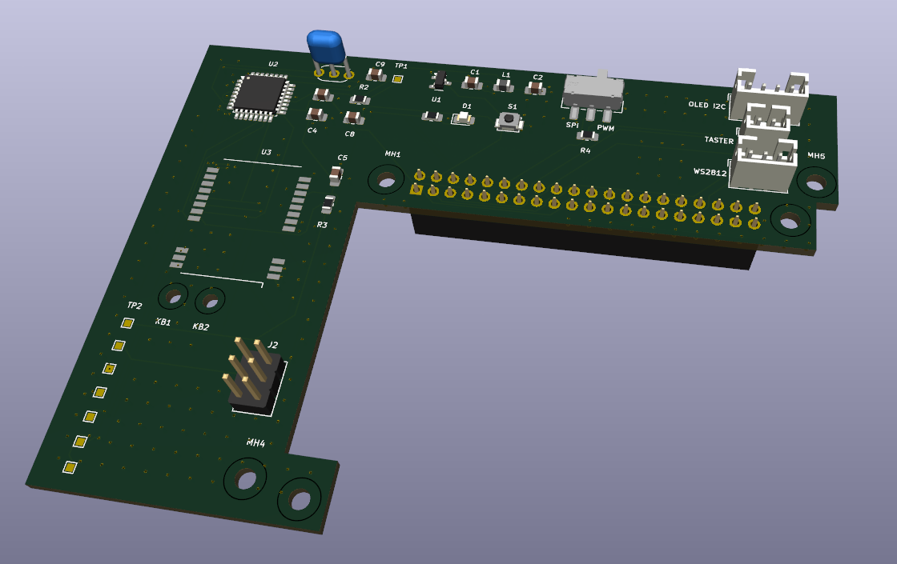
Dieses Handbuch richtet sich an Einsteigerinnen und Einsteiger. Du brauchst keine Elektronik-Ausbildung — aber einen Lötkolben, etwas Geduld und die Bereitschaft, Befehle in ein Terminal zu tippen. Jeder Schritt ist vollständig beschrieben: Was du tust, warum du es tust, und woran du erkennst, dass es geklappt hat.
Befehle für das Terminal sehen so aus — sie werden Zeile für Zeile eingegeben
und mit Enter abgeschickt. Zeilen, die mit # beginnen,
sind Kommentare und werden nicht eingetippt:
# Das ist ein Kommentar — nur zur Erklärung
sudo apt update
Wer ein Homematic-Funksystem betreibt, kennt das Gefühl: Ein Fensterkontakt meldet sich nur sporadisch, ein Heizkörperthermostat reagiert verzögert, und niemand weiß, warum. Der Funkverkehr ist unsichtbar — man sieht nur, ob etwas ankommt oder nicht.
Der AskSin-Analyzer macht diesen Funkverkehr sichtbar. Er ist ein passiver Mithörer: Er empfängt jedes BidCoS-Telegramm im 868-MHz-Band — auch die der Nachbarn —, sendet aber selbst niemals. Aus dem Mitgehörten entstehen drei Dinge:
| Was | Wozu |
|---|---|
| Duty-Cycle je Gerät | Jeder Sender darf pro Stunde nur 1 % der Zeit senden (36 Sekunden). Wer dagegen verstößt — etwa ein defektes Gerät in einer Sendeschleife — legt zeitweise das ganze Funknetz lahm. Der Analyzer zeigt, wer wie viel sendet. |
| Empfangspegel (RSSI) | Wie laut kommt jedes Gerät an? Werte um −50 dBm sind sehr gut, ab etwa −95 dBm wird es kritisch. So findet man Funklöcher und schlecht platzierte Geräte. |
| Telegrammraten und Stille | Sendet ein Gerät plötzlich gar nicht mehr? Oder viel häufiger als sonst? Beides ist ein Frühwarnsignal. |
Die bekannten AskSinAnalyzer-Varianten laufen auf einem ESP32 mit Display. Unser Aufbau zielt auf Dauerbetrieb im Verteilerschrank:
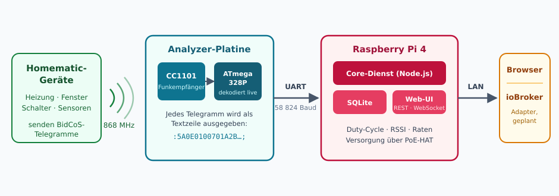
Das System besteht aus zwei Rechnern, die sich die Arbeit teilen — und genau diese Teilung macht es zuverlässig:
Alles, was zwischen Mikrocontroller und Pi fließt, ist lesbarer Text. Eine typische Zeile:
:5A0E0100701A2B3C0000000102030405;
| Feld | Beispiel | Bedeutung |
|---|---|---|
| RSSI | 5A | Empfangspegel als Betrag: hex 5A = 90 → −90 dBm |
| Länge | 0E | Telegrammlänge laut BidCoS: 14 Byte |
| Zähler | 01 | Laufende Nummer des Senders — Lücken = verpasste Telegramme |
| Flags | 00 | Steuerbits (z. B. „Antwort erwartet", „Burst") |
| Typ | 70 | Telegrammtyp — 0x70 ist WEATHER, ein Wetterdatentelegramm |
| Absender | 1A2B3C | Geräteadresse des Senders (3 Byte) |
| Empfänger | 000000 | Zieladresse — 000000 ist Rundruf an alle |
| Nutzdaten | 0102… | Der Inhalt, z. B. Temperatur und Luftfeuchte |
Zusätzlich schickt der Empfänger alle 750 ms eine Kurzzeile wie
:5B; — das ist das Grundrauschen des Kanals, also der
Pegel, wenn gerade niemand sendet. Steigt es dauerhaft, stört etwas — etwa ein
schlecht entstörtes Netzteil.
Alles, was du für einen Analyzer brauchst. Die Platine und ihre SMD-Bestückung kommen aus der Fertigung (Kapitel 5), der Rest wird bestellt und selbst aufgelötet.
| Menge | Teil | Bemerkung |
|---|---|---|
| 1 | Raspberry Pi 4 | Modell B, RAM-Größe egal — der Analyzer selbst braucht wenig |
| 1 | PoE-HAT mit durchgeschleiftem 40-Pin-Header | z. B. Waveshare PoE HAT (B). Wichtig ist der Stapelheader obendrauf — der offizielle Raspberry-Pi-PoE+-HAT hat keinen! |
| 1 | microSD-Karte, ab 16 GB | für Raspberry Pi OS. Beim Pi 3 ab 32 GB von einem Markenhersteller — dort ist sie das dauerhafte Bootmedium, nicht nur der Starthelfer (Kapitel 9.1). |
| 1 | Analyzer-Platine V4, SMD-bestückt | Fertigung nach Kapitel 5 |
Die geprüften Artikelnummern — Details und Alternativen stehen in
hardware/bestellliste-reichelt.md im Projektordner:
| Pos. | Menge | Reichelt-Artikel | Was es ist |
|---|---|---|---|
| J1 | 1 | MPE 094-2-040 | Buchsenleiste 2×20 — die Verbindung zum Pi |
| J2 | 1 | ECON SL6G2 | Stiftleiste 2×3 — der Programmieranschluss |
| J5–J7 | je 1 | JST PH4P ST, JST PH2P ST, JST PH3P ST | Stecker für OLED, Taster, LED |
| — | je 1 | JST PH4P BU, PH2P BU, PH3P BU | die passenden Buchsengehäuse |
| — | ≥ 15 | JST PH CKB | Crimpkontakte (9 gebraucht + Reserve!) |
| Menge | Teil | Quelle / Bezeichnung |
|---|---|---|
| 1 | Funkmodul Ebyte E07-900M10S | cdebyte.com, Antratek, AliExpress. Genau diese Bezeichnung! Das ähnlich heißende E07-900MM10S ist kleiner und hat keinen Antennenanschluss. |
| 1 | Antenne 868 MHz mit SMA-Anschluss | z. B. Stabantenne 3 dBi |
| 1 | IPEX-auf-SMA-Kabel („Pigtail") | Muss U.FL/IPEX-1 sein — MHF2/3/4 sehen ähnlich aus, passen aber nicht. Länge zum Gehäuse einplanen (15–20 cm üblich). |
| 4 + 2 | Abstandsbolzen M2,5 + Schrauben | Befestigung der Platine (4 vorn, 2 stützen hinten) |
| 1 | Kabelbinder, schmal (≤ 2 mm) | Zugentlastung für das Antennenkabel |
Man kann die Platine bestücken, ohne sie zu verstehen — aber mit diesem Kapitel weißt du bei jedem Bauteil, was du gerade auflötest und warum es da sitzt.
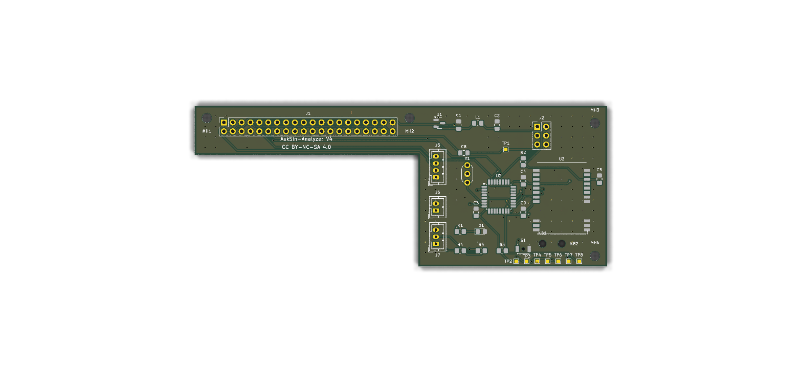
Nur der schmale Arm liegt über dem Pi — 8 mm tief, gerade so viel, wie die 2×20-Buchse und die Befestigungsbohrungen brauchen. Alle Bauteile sitzen im Streifen, der parallel neben dem Pi an der Seite des 40-poligen Headers verläuft und höchstens 20 mm breit ist, sowie im Schenkel, der 32 mm hinter der SD-Kante nach hinten aussteht. Vier Gründe:
hardware/kicad/adapter/). Mit dem Adapter laufen sie einwandfrei.
Ab Hardware 0.2.0 ist der Fehler behoben; erkennbar am Bestückungsdruck auf
der Platinenunterseite.| Block | Bauteile | Aufgabe |
|---|---|---|
| Stromversorgung | U1, C1, C2, L1 | Aus den 5 V des Pi macht der Regler U1 saubere 3,3 V. Die Ferritperle L1 hält hochfrequenten Schmutz vom Funkteil fern, C1/C2 puffern. |
| Mikrocontroller | U2, Y1, C3, C4, C9 | Der ATmega328P mit seinem 8-MHz-Taktgeber Y1. C3/C4 stützen die Versorgung direkt am Chip, C9 beruhigt die Messreferenz. |
| Funkmodul | U3, C5 | Das Ebyte-Modul mit dem CC1101-Empfänger. Die Antenne verlässt es über die kleine IPEX-Buchse — auf der Platine selbst gibt es keine einzige Hochfrequenz-Leitung. |
| Reset-Strecke | C8, R2, S1, TP1 | Über GPIO4 des Pi kann der Mikrocontroller neu gestartet werden (für Firmware-Updates, Kapitel 11). C8 koppelt nur den Impuls, R2 hält die Leitung in Ruhe oben, S1 ist der Taster für den Handreset. |
| SPI-Verteilung | R3 | Mikrocontroller, Funkmodul und Programmieranschluss teilen sich den SPI-Bus. R3 sorgt dafür, dass das Funkmodul still ist, während programmiert wird. |
| Status-LED | R1, D1 | Blitzt bei jedem empfangenen Telegramm kurz auf. |
| Peripherie | J5, J6, J7, SW1, R4 | Stecker für OLED-Display, Taster und WS2812-LED des Status-LED-Projekts. Der Schiebeschalter SW1 an der Außenkante wählt, über welchen Pi-Pin die LED-Daten laufen; R4 (330 Ω) ist der gemeinsame Serienwiderstand dahinter. |
| Prüfpunkte | TP1–TP8 | Kleine Messpads für Multimeter und Fehlersuche (Belegung im Anhang). |
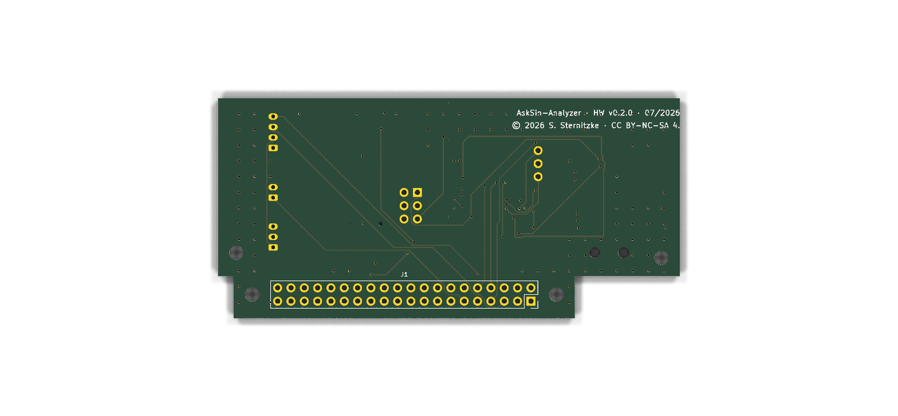
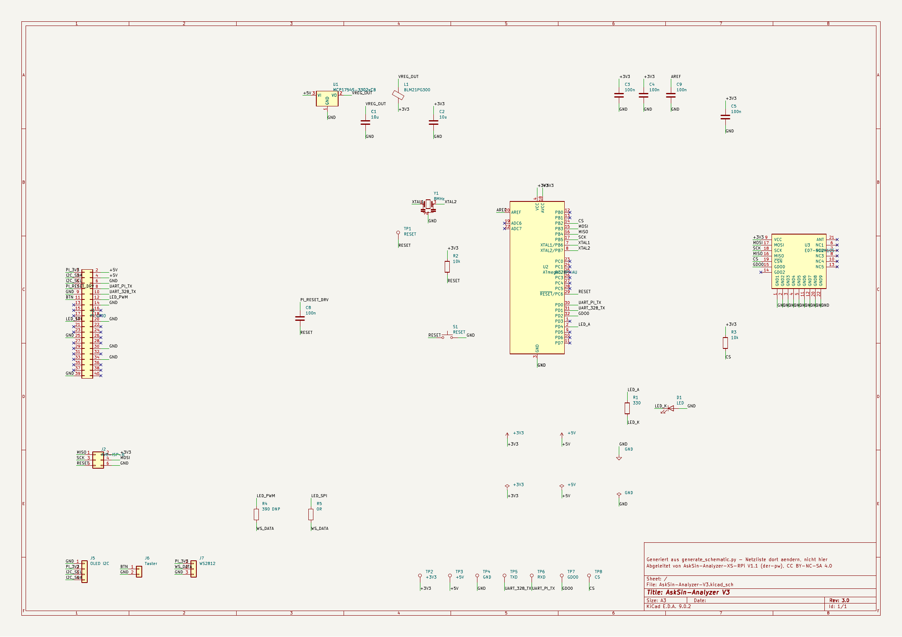
doku/schaltplan.pdf).Die Platine wird industriell gefertigt und die kleinteiligen SMD-Bauteile gleich mitbestückt — das ist günstiger und zuverlässiger, als 0805-Widerstände von Hand zu löten. Beschrieben ist der Weg über JLCPCB; andere Fertiger funktionieren analog.
Alles Nötige steckt in einer Datei im Projektordner:
hardware/kicad/AskSin-Analyzer-V3-fertigung.zip ├── gerber/ ← die Platine selbst (für den Fertiger) ├── bestueckung/ ← jlcpcb_bom.csv + jlcpcb_cpl.csv (für die Bestückung) └── doku/ ← Schaltplan und Layout als PDF (für dich)
gerber/ als
eigene ZIP hochladen.)bestueckung/jlcpcb_bom.csv als BOM und
bestueckung/jlcpcb_cpl.csv als CPL-Datei hochladen.| Ref | Bauteil | LCSC-Nr. | Status |
|---|---|---|---|
| U1 | Spannungsregler XC6206P332MR-G (pinkompatibler Ersatz für MCP1754S) | C5446 | Basic |
| U2 | ATmega328P-AU | C14877 | Extended |
| S1 | Taster Omron B3U-1000P (Variante ohne Zentrierstift — gleiche Pads, die kleine Bohrung bleibt leer) | C231329 | Extended |
| Y1 | Resonator Murata CSTLS8M00G53-B0 (bedrahtet — JLCPCB lötet ihn in der Welle mit) | C83707 | Extended |
| L1 | Ferrit BLM21PG300SN1D | C16903 | Extended |
| D1 | LED rot 0805 | C84256 | Basic |
| R1, R4 / R2, R3 | 330 Ω / 10 kΩ | C17630 / C17414 | Basic |
| SW1 | Schiebeschalter C&K JS102011SAQN (wählt PWM oder SPI für die LED-Daten) | C221660 | Extended |
| C1,C2 | 10 µF 25 V | C15850 | Basic |
| C3–C5,C8,C9 | 100 nF 50 V | C49678 | Basic |
Nicht bestückt werden: das Funkmodul U3 (führt JLCPCB nicht) und die bedrahteten Steckverbinder J1, J2 und J5–J7. Die kommen in Kapitel 6 von Hand drauf. Der Resonator Y1 ist zwar auch bedrahtet, wird aber von JLCPCB mitbestückt. Unbestückte Plätze gibt es seit v0.2.0 keine mehr — die frühere Regel „R4 oder R5" hat der Schiebeschalter SW1 abgelöst.
Aus der Fertigung kommt die Platine mit allen Kleinteilen. Von Hand fehlen noch sechs Positionen — in dieser Reihenfolge:
| # | Ref | Bauteil | Schwierigkeit |
|---|---|---|---|
| 1 | U3 | Funkmodul E07-900M10S | mittel — Halblöcher, siehe 6.2 |
| 2 | J2 | ISP-Stiftleiste 2×3 | leicht |
| 3 | J5, J6, J7 | JST-PH-Stecker | leicht |
| 5 | J1 | Buchsenleiste 2×20 | leicht, aber 40 Lötstellen |
Das E07-900M10S steht dort als C9900007000
im Katalog. Wer die Platine ohnehin bestücken lässt, kann sich dieses Kapitel
sparen — es ist die anspruchsvollste Lötstelle der ganzen Platine, und sie hat
am 14.08.2026 eine von fünf Platinen gekostet. Einzelheiten in
hardware/README.md, Abschnitt „Bestückung bei JLCPCB".
Das E07-Modul hat keine Beinchen, sondern Halblöcher (halbrunde, metallisierte Kerben an den Kanten — englisch „castellated holes"). Das lötet sich leichter, als es aussieht:
Am 14.08.2026 fiel eine von fünf Platinen aus: Der USBasp meldete
target does not answer (0x01), und zwar bei jeder Taktrate, bis
hinunter zu 16 kHz. Vier Schwesterplatinen liefen mit demselben Programmierer
auf Anhieb.
Die Ursache war eine Lötbrücke zwischen Pad 16 (MISO) und Pad 17 (MOSI) des Funkmoduls. Der Programmierer legt sein Kommando auf MOSI und liest gleichzeitig MISO — sind beide verbunden, liest er seine eigenen Bits zurück statt der Antwort des Chips. Er bekommt also durchaus etwas, nur nie das erwartete Echo.
Eine Durchgangsprüfung entlang der Leitungen findet das nicht — beide Wege sind ja in Ordnung. Gemessen werden muss zwischen ihnen. Deshalb die eine Messung oben, bevor der Programmierer angeschlossen wird.
| Prüfung | Multimeter | Sollwert |
|---|---|---|
| Kurzschluss 5 V ↔ Masse? | Widerstand zwischen TP3 (+5V) und TP4 (GND) | deutlich > 1 kΩ, nicht 0 Ω |
| Kurzschluss 3,3 V ↔ Masse? | Widerstand zwischen TP2 (+3V3) und TP4 | > 1 kΩ, nicht 0 Ω |
| Modul richtig herum? | Sichtprüfung | IPEX-Buchse zeigt zur rechten Kante |
| Lötbrücken an U3? | Lupe | alle 22 Kerben einzeln, keine Verbindungen quer |
Ein fabrikneuer ATmega328P ist ein unbeschriebenes Blatt: Er läuft auf einem langsamen internen Notversorgungs-Takt und weiß nichts von unserem 8-MHz-Resonator. Bevor er Firmware ausführen kann, müssen einmalig zwei Dinge passieren — und beide gehen über den ISP-Anschluss J2:
Arduino IDE (Windows, macOS,
Linux): Abschnitt 7.1, dann 7.2 falls Windows, dann direkt
7.5. Fuses und Bootloader gehen dort in einem Schritt,
avrdude brauchen Sie nicht getrennt.
Kommandozeile (Linux, auch auf dem Pi): 7.1, 7.3, 7.4, 7.5.
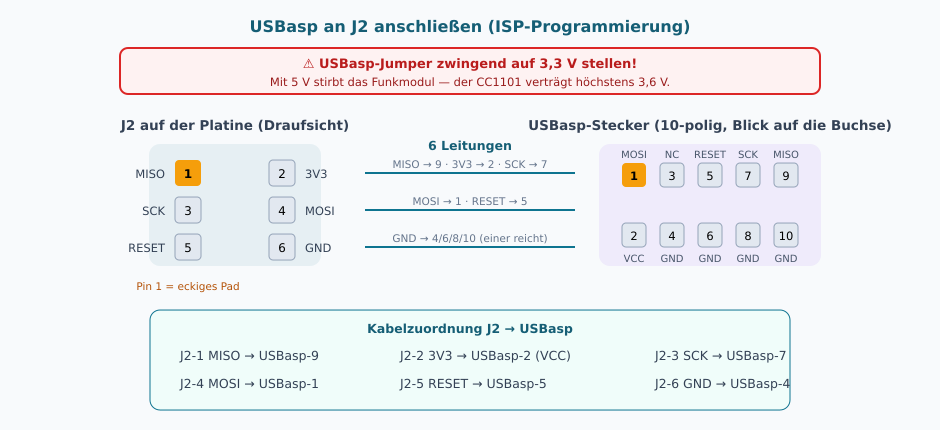
Unter Windows meldet sich der USBasp als unbekanntes Gerät. Ohne Treiber
findet ihn kein Programm — die Arduino IDE meldet dann
cannot find USB device, und man sucht den Fehler bei der
Verkabelung, wo keiner ist.
Der Treiber wird mit Zadig installiert, einem kleinen Programm, das man weder einrichten noch dauerhaft behalten muss.
zadig.akeo.ie herunterladen. Es ist
eine einzelne .exe, die ohne Installation läuft. Mit
Rechtsklick → Als Administrator ausführen starten.Zadig zeigt alle USB-Geräte an, sobald List All Devices aktiv ist. Es ersetzt den Treiber genau des Geräts, das oben ausgewählt ist. Vor dem Klick auf Install Driver also nachlesen, ob dort wirklich USBasp steht — nicht die Maus, nicht die Tastatur, nicht der USB-Stick.
Der Treiber bleibt dauerhaft installiert; Zadig wird nur dieses eine Mal gebraucht und kann danach gelöscht werden.
Merken Sie sich die USB-Buchse. Windows bindet den Treiber pro Anschluss. Stecken Sie den USBasp später in eine andere Buchse, legt Windows dort eine neue Geräteinstanz an — ohne libusbK. Die Arduino IDE meldet dann erneut:
Error: cannot find USB device with vid=0x16c0 pid=0x5dc Error: unable to open port usb for programmer usbasp
Das sieht aus wie ein defektes Programmiergerät, ist aber nur die falsche Buchse. Der Reihe nach:
USBasp unter libusbK USB Devices,
ist der Treiber da. Steht er unter Andere Geräte mit gelbem
Ausrufezeichen, fehlt er an dieser Buchse.Stehen vor der Meldung zwei Zeilen Warning: cannot query
manufacturer/product for device: Broken pipe, meldet sich das Gerät zwar
an, bricht die Abfrage aber ab. Das kommt auch von einem wackeligen Kabel —
falls vorhanden, ein anderes probieren.
Wichtig: Bei diesem Fehler ist an der Platine nichts passiert. Der Vorgang scheitert, bevor der ATmega überhaupt angesprochen wird — Firmware und Fuses bleiben, wie sie waren.
avrdude brauchen Sie unter Windows nicht getrennt zu installieren — die Arduino IDE bringt es mit. Der folgende Abschnitt 7.3 gilt für Linux und den Pi; wer mit der Arduino IDE arbeitet, springt direkt zu 7.5.
avrdude ist das Standardwerkzeug zum Programmieren von
AVR-Chips. Auf einem Linux-Rechner (auch dem Pi selbst):
sudo apt update sudo apt install avrdude
Erster Verbindungstest — er liest nur die Signatur des Chips:
avrdude -c usbasp -p m328p -B 8
Erwartete Ausgabe (gekürzt):
avrdude: device initialized and ready to accept instructions
avrdude: Device signature = 0x1e950f (probably m328p)
avrdude done. Thank you.
-B 8 nicht vergessen
Ein fabrikneuer 328P taktet mit nur 1 MHz. -B 8 bremst den
Programmiertakt so weit, dass der Chip mitkommt. Ohne diese Option meldet
avrdude target doesn't answer — der häufigste Anfängerstolperer
überhaupt. Nach dem Setzen der Fuses (8 MHz) ist -B 8 nicht mehr
nötig, schadet aber auch nie.Unsere Werte — sie stellen den Chip auf den externen 8-MHz-Resonator, aktivieren die Spannungsüberwachung und reservieren Platz für den Bootloader:
| Fuse | Wert | Bewirkt |
|---|---|---|
| low (lfuse) | 0xFF | externer Taktgeber 8–16 MHz, kein Teiler — der Chip läuft mit vollen 8 MHz vom Resonator Y1 |
| high (hfuse) | 0xDE | Bootloader-Bereich 512 Byte, Start im Bootloader |
| extended (efuse) | 0xFD | Brown-out bei 2,7 V — der Chip stoppt sauber, statt bei Unterspannung Amok zu laufen |
avrdude -c usbasp -p m328p -B 8 \
-U lfuse:w:0xFF:m -U hfuse:w:0xDE:m -U efuse:w:0xFD:m
avrdude schreibt jede Fuse und liest sie zur Kontrolle zurück
(… verified).
0x05 statt
0xFD an. Das ist kein Fehler: Nur die unteren 3 Bit existieren
physisch, der Rest ist undefiniert und wird mal als 1, mal als 0 gelesen.
0x05 und 0xFD sind derselbe Wert.Wir verwenden den Bootloader aus dem MiniCore-Projekt — die Variante für ATmega328P, serielle Schnittstelle UART0, mit Watchdog von einer Sekunde. Zwei Wege führen zum Ziel; nimm den, der dir näher liegt.
Seit Fassung 3 schreibt MiniCore urboot statt Optiboot, und
das spricht ein anderes Protokoll: urclock statt STK500v1. In
boards.txt steht das ausdrücklich:
328.menu.bootloader.uart0.upload.protocol=urclock ...bootloader.file=urboot/…/autobaud/…/urboot_atmega328p_pr_ee_ce.hex
Für Sie ändert das nichts — die Arduino IDE wählt das Richtige selbst, und
der Analyzer versucht beim Aufspielen ohnehin zuerst urclock und
danach arduino. Wichtig ist es nur, wenn Sie avrdude
von Hand aufrufen: Mit -c arduino reden die beiden aneinander
vorbei, und zwar völlig gleichmäßig — zehnmal
not in sync: resp=0xa0. Bei einem echten Übertragungsproblem wären
die Antworten unterschiedlich.
Der Bootloader arbeitet außerdem mit Autobaud: Er misst die Rate der Gegenstelle selbst. Die krumme 58 824 stört ihn also nicht.
Die Arduino IDE setzt Fuses und Bootloader in einem Rutsch — wer Weg A geht, kann Abschnitt 7.4 sogar überspringen.
https://mcudude.github.io/MiniCore/package_MCUdude_MiniCore_index.json| Einstellung | Wert |
|---|---|
| Board | MiniCore → ATmega328 |
| Variant | 328P / 328PA |
| Clock | External 8 MHz |
| BOD | 2.7 V |
| Compiler LTO | LTO enabled — diese Zeile fehlte hier bis zum 03.08.2026. Sie macht das fertige Programm rund 500 Byte kleiner. Wer sie abgeschaltet lässt, bekommt eine andere Datei als die mitgelieferte — beide laufen, aber vergleichen lassen sie sich dann nicht. |
| EEPROM | EEPROM retained |
| Bootloader | Yes (UART0) |
| Programmer | USBasp |
avr/bootloaders/optiboot_flash/bootloaders/atmega328p/):
die Datei für 8000000L, UART0, 57600 Baud — Dateiname nach dem Muster
optiboot_flash_atmega328p_UART0_57600_8000000L.hex.avrdude -c usbasp -p m328p \
-U flash:w:optiboot_flash_atmega328p_UART0_57600_8000000L.hex:iavrdude -c usbasp -p m328p — jetzt ohne
-B 8 — antwortet flott. Vorher (1-MHz-Takt) ging das nur gebremst.| Meldung | Ursache | Abhilfe |
|---|---|---|
target doesn't answerprogram enable: target does not answer (0x01) | Programmiertakt zu schnell, Platine gleichzeitig am Pi, oder Verkabelung | Zuerst: Platine vom Pi abziehen. Steckt sie dort, speisen zwei Quellen dieselbe 3,3-V-Schiene und der Pi hält Pegel auf GPIO4 und GPIO14. Dann in der Arduino IDE den Programmer „USBasp slow" wählen (entspricht -B 32); ein fabrikneuer Chip läuft noch auf 1 MHz und ist bei voller Geschwindigkeit nicht ansprechbar. Zuletzt alle 6 Leitungen prüfen — MISO/MOSI vertauscht ist der Klassiker |
cannot find USB device with vid=0x16c0 pid=0x5dc | libusbK fehlt an dieser USB-Buchse | Windows bindet den Treiber pro Anschluss. Dieselbe Buchse wie beim ersten Zadig-Lauf nehmen, sonst Zadig erneut — die vollständige Reihenfolge steht in Kapitel 7.2. Unter Linux ggf. mit sudo testen, dauerhaft besser eine udev-Regel. An der Platine passiert dabei nichts; der Vorgang scheitert, bevor der ATmega angesprochen wird |
protokoll.h: No such file or directory | Sketch-Ordner unvollständig | Der Ordner braucht alle drei Dateien und muss heißen wie die .ino — Kapitel 8.1. Nicht in einem build\-Verzeichnis arbeiten |
not in sync: resp=0xa0, zehnmal gleich | Bootloader spricht ein anderes Protokoll | MiniCore schreibt seit Fassung 3 urboot, nicht Optiboot — das spricht urclock. Der Analyzer versucht das seit 0.15.2 von selbst zuerst. Von Hand: avrdude -c urclock statt -c arduino |
not in sync: resp=0x3a beim Flashen über die Weboberfläche | kein Bootloader auf dem Chip | 0x3a ist das Zeichen : — das ist die laufende Ausgabe des Sketches, nicht der Bootloader. Er wurde von Hochladen mit Programmer gelöscht. Abhilfe: Werkzeuge → Bootloader brennen, danach den Sketch über die Weboberfläche aufspielen statt über den Programmer |
| Alles gelingt, die Platine bleibt trotzdem stumm | Firmware ohne Ausgabe übersetzt | Die Datei mit python3 firmware/pruefe-hex.py prüfen — das ist die einzige verlässliche Auskunft. Die Größenmeldung hilft nur beim gröbsten Fall: genau 6 922 Byte wären das unveränderte Original. Hintergrund in Kapitel 8.3 |
invalid device signature 0x000000 | Chip bekommt keinen Strom oder RESET klemmt | Jumper 3,3 V? Steckt Pin 2? Taster S1 versehentlich gedrückt/verklemmt? |
| Signatur ≠ 0x1e950f | Kontaktproblem | Leitungen kürzen (< 20 cm), erneut versuchen |
Dieser Abschnitt ist das Ergebnis eines verlorenen Tages. Er beschreibt eine Falle, die man nicht sieht, weil jeder Fehlversuch dasselbe Bild ergibt: Die Platine schweigt, und man sucht bei der Hardware.
Der Bootloader kommt einmal über den USBasp auf die Platine. Die Firmware kommt danach immer über die Weboberfläche — nie über Hochladen mit Programmer.
Erstens: Er löscht ihn. Die Arduino IDE ruft
avrdude ohne -D auf. -D schaltet das
automatische Löschen ab — es ist also die Voreinstellung, und der Chip
wird vor dem Schreiben vollständig gelöscht. Ein ausgeschriebenes
-e steht nirgends; wer danach sucht, findet nichts und schließt
das Falsche.
Zweitens: Er macht ihn unerreichbar. MiniCore lässt
BOOTRST unprogrammiert (hfuse 0xd7) — das ist
Absicht. urboot ist ein Vektor-Bootloader: Er wird nicht über
BOOTRST angesprungen, sondern der Reset-Vektor bei
0x0000 wird auf ihn umgebogen. Das erledigt
avrdude -c urclock beim Aufspielen der Anwendung — also nur auf
dem Weg über die serielle Schnittstelle. Ein ISP-Upload lässt den Vektor
ungebogen zurück.
sudo bash /opt/asksin-analyzer/deploy/bootloader-brennen.sh urboot_atmega328p_pr_ee_ce.hex
Das Skript prüft vorher, ob die Datei überhaupt in den Bootbereich gehört —
eine verwechselte Firmware würde den Chip sonst leeren und nichts
Brauchbares hinterlassen.Ab dann läuft jedes weitere Update ohne Programmiergerät. Der USBasp wird nur noch gebraucht, wenn ein Chip gar nicht mehr antwortet.
Zwei Bedingungen mussten erfüllt sein, damit der Flash über die serielle Schnittstelle gelingt. Beide wurden an echter Hardware durchgemessen:
| Baudrate | Reset zuerst, dann avrdude |
|---|---|
| 115200 | kein Sync |
| 57600 | Sync |
| 19200 | Sync |
Erst zurücksetzen, dann avrdude starten.
urboot betritt seine Programmierschleife ausschließlich nach einem
externen Reset und lauscht danach genau eine Sekunde. In dieser Zeit
misst er die Baudrate an der ersten LOW-Phase auf der Leitung.
Läuft avrdude schon und sendet, fällt der Reset mitten in ein Byte
— die Messung geht daneben, und es bleibt bei not in sync.
57600 Baud statt der krummen 58 824. urboot misst die Rate selbst, sie muss also nicht zur Firmware passen. Bei 8 MHz ist 115200 zu schnell für seine Zählschleife. 57600 passt zusätzlich zu einem alten Optiboot: Der spricht bei 8 MHz real 58 823,5, das sind 2,1 % Abweichung und damit innerhalb der Toleranz.
Beides steckt im Analyzer, Sie müssen dafür nichts einstellen. Der Verlauf
in der Weboberfläche zeigt es mit: erst GPIO4 → LOW, dann
avrdude -c urclock … mit 57600 Baud.
Die Firmware ist eine abgewandelte Fassung des
AskSinSniffer328P von jp112sdl. Sie liegt in einem eigenen Projekt:
github.com/ssbingo/asksin-sniffer-firmware. Was gegenüber dem
Original anders ist, steht in Kapitel 11.5; die Lizenz bleibt unverändert
CC BY-NC-SA 3.0.
while (digitalRead(PIN_SPI_MISO));). Steckt keines, bleibt der
Sketch im setup() stehen, noch bevor er ein Zeichen ausgegeben
hat — die Platine wirkt tot. Genau dieser Fall tritt beim Aufbau regelmäßig
ein. Unsere Fassung läuft weiter und meldet stattdessen
:!CC,--;. Kapitel 11.6 nutzt das, um eine Platine ohne Funkmodul
in Betrieb zu nehmen.github.com/ssbingo/asksin-sniffer-firmware über
Code → Download ZIP herunterladen und entpacken.asksin-sniffer vollständig
irgendwohin kopieren — nicht nur die .ino. Er enthält
drei Dateien, und alle drei werden gebraucht:
| Datei | Inhalt |
|---|---|
asksin-sniffer.ino | der Sketch |
protokoll.h | Zeilenbauer, Befehlsleser, Prüfsumme |
protokoll.cpp | deren Umsetzung |
| Bibliothek | Woher |
|---|---|
| AskSinPP | github.com/pa-pa/AskSinPP → „Code → Download ZIP" → in der Arduino IDE über Sketch → Bibliothek einbinden → .ZIP-Bibliothek hinzufügen |
| EnableInterrupt | Arduino-Bibliotheksverwalter (Suche: „EnableInterrupt") |
| Low-Power | Bibliotheksverwalter (Suche: „Low-Power", Autor Rocket Scream) |
.ino. Liegt die Datei woanders — etwa
in einem build\-Verzeichnis —, bricht die Übersetzung ab mit:
fatal error: protokoll.h: No such file or directoryNach dem Öffnen zeigt die IDE drei Reiter nebeneinander. Sieht man nur einen, fehlen die anderen beiden.
asksin-sniffer.ino in der IDE öffnen.| Meldung | Bedeutung |
|---|---|
| 8 540 Byte | richtig — unsere Fassung mit AskSinPP 5.0.3, EnableInterrupt 1.1.0 und Low-Power 1.81. Andere Bibliotheksfassungen ergeben ein paar Byte Unterschied; entscheidend ist der Abstand nach oben |
| 7 630 Byte | unsere Fassung, aber stumm übersetzt — dann fehlt die Aufhebung von NDEBUG (Kapitel 8.3) |
| genau 6 922 Byte | das unveränderte Original; dann wurde der falsche Ordner geöffnet |
Das ist die wichtigste Fußangel dieses Kapitels, und sie sieht harmlos aus.
Hochladen mit Programmer ruft avrdude ohne den
Schalter -D auf. -D schaltet das automatische Löschen
ab — es ist also die Voreinstellung, und der Chip wird vor dem
Schreiben vollständig gelöscht, Bootloader eingeschlossen.
Im Aufruf steht kein sichtbares -e; wer danach sucht, findet
nichts und schließt das Falsche.
Danach lässt sich die Firmware nicht mehr über die Weboberfläche
aufspielen: Es gibt niemanden mehr, der das Update entgegennimmt. Das
Fehlerbild ist eindeutig, wenn man es kennt —
not in sync: resp=0x3a, und 0x3a ist das Zeichen
:, also die laufende Ausgabe des Sketches statt einer Antwort des
Bootloaders.
Die richtige Reihenfolge steht in Kapitel 7.7 — dort mit der vollständigen Begründung, warum ein Programmer-Upload den Bootloader gleich zweifach unbrauchbar macht.
Bis zum 09.08.2026 lieferte dieses Projekt eine fertig übersetzte HEX-Datei mit — byte-genau reproduzierbar, mit Prüfsumme im Handbuch. Sie war stumm.
AskSinPP macht aus seinen Ausgabemakros DPRINT,
DPRINTLN und DINIT leere Anweisungen, sobald
NDEBUG gesetzt ist. Für eine Bibliothek ist das richtig. Beim
Sniffer ist es das Gegenteil: Telegramme, Rauschzeilen und Versionsauskunft
gehen alle über diese Makros. Und MiniCore setzt
NDEBUG fest, bei jedem Übersetzungslauf:
MiniCore/hardware/avr/3.1.2/platform.txt, Zeile 14 compiler.optimization_flags=-Os -DNDEBUG
Die Firmware lief damit einwandfrei und sendete nie ein Zeichen. Nicht
einmal Serial.begin() kam zustande, weil auch DINIT
leer war; der Sendepin blieb hochohmig, und von außen war das von einer
defekten Platine nicht zu unterscheiden.
Unser Sketch hebt NDEBUG deshalb selbst auf, bevor er AskSinPP
einbindet, und bricht die Übersetzung ab, falls es je wieder gesetzt wird.
Wer eine HEX-Datei von irgendwoher bekommt, prüft sie vorher:
python3 firmware/pruefe-hex.py datei.hex
Das Skript verlangt die Startkennung AskSin++ v als Text im
Programmabbild. Fehlt sie, waren die Ausgabemakros leer — Größe, Adressen und
Prüfsumme hätten das nie verraten.
Wie deutlich der Unterschied ist, zeigt eine Gegenprobe mit derselben
Werkzeugkette und demselben Quelltext, einmal mit und einmal ohne die
Aufhebung von NDEBUG:
| Bau | Größe | Startkennung im Abbild |
|---|---|---|
| mit Aufhebung (so wie ausgeliefert) | 8 540 Byte | vorhanden |
| ohne Aufhebung | 7 630 Byte | fehlt — stumm |
910 Byte Unterschied bei Zeichen für Zeichen demselben Quelltext — das sind die Ausgabetexte und der Code, der sie verschickt. Wer eine Firmware mit 7 630 Byte vor sich hat, hält eine stumme in der Hand.
Noch am USBasp, der die Platine mit 3,3 V versorgt: D1 blinkt beim Start dreimal. Das ist die Startanzeige von AskSinPP und beweist, dass der Chip Programmcode ausführt.
Mehr sagt der Blink allerdings nicht — insbesondere nichts darüber, ob die serielle Ausgabe funktioniert. Genau diese Verwechslung hat einmal einen halben Tag gekostet: Die LED blinkte, und trotzdem kam kein Byte an. Der belastbare Test folgt in Kapitel 9 am Pi, wo die Zeilen tatsächlich ankommen müssen.
Blitzt D1 beim Empfang eines Homematic-Telegramms — zum Provozieren reicht ein Fensterkontakt —, ist auch das Funkmodul in Ordnung. Kein Blitzen ist noch kein Beinbruch: Ohne Antenne ist die Reichweite winzig.
Die gute Nachricht vorweg: Die gesamte Software-Installation ist ein einziger Befehl. Ein Assistent stellt dir ein paar Fragen, alles Weitere — Node.js, Dienste, Berechtigungen, sogar die Einrichtung der seriellen Schnittstelle — erledigt der Installer selbst. Dieses Kapitel erklärt jeden Schritt und jede Frage, damit du weißt, was du antwortest und warum.
sudo raspi-config → Advanced → Boot Order auf USB stellen.Der Pi 3 wird nicht von SSD betrieben, sondern von SD-Karte. Drei Gründe, die zusammenkommen:
Für einen Pi 3 gilt deshalb: SD-Karte ab 32 GB von einem Markenhersteller, und die Aufbewahrung der Telegramme kürzer einstellen (Kapitel 13.4). Zum Verschleiß siehe unten — er ist real, aber mit einer ordentlichen Karte und weniger Aufbewahrung gut beherrschbar.
Ohnehin gilt: Ein Pi 3 kann kein Master sein (Kapitel 19.4). Er läuft als Client — und ein Client schreibt deutlich weniger, weil die Langzeitdaten beim Master liegen.
asksin-analyzer-01), Benutzer, SSH und ggf. WLAN setzen — dann
läuft alles ohne Monitor („headless"). Der Hostname gehört dir und deiner
Netzwerkstruktur; die Software ändert ihn nie von sich aus.ssh benutzer@asksin-analyzer-01.curl -fsSL https://raw.githubusercontent.com/ssbingo/asksin-analyzer-rpi/main/install.sh | sudo bash
Der Installer ist idempotent: Du kannst ihn jederzeit erneut ausführen — er aktualisiert dann die Installation und stellt die Fragen noch einmal (deine bestehende Konfiguration behält er auf Wunsch). Was er der Reihe nach tut:
/opt/asksin-analyzer, danach wird
die Weboberfläche gebaut (dauert auf dem Pi ein paar Minuten — normal).asksin mit den Gruppen
dialout (serieller Port) und gpio — der Dienst läuft
bewusst ohne Root-Rechte.| Frage | Empfehlung und Hintergrund |
|---|---|
| Standortname (Vorgabe: Hostname) | z. B. „Keller" oder „DG-Ost". Ein reines Anzeige-Etikett für Weboberfläche, Verbund und Auswertungen — es ändert den Hostnamen nicht. Später jederzeit unter Einstellungen → Standort & Zentrale änderbar. |
| IP/Hostname der CCU | Adresse deiner CCU/RaspberryMatic — daher bekommt der Analyzer die Gerätenamen. Leer lassen geht auch: dann erscheinen Geräte als Hex-Adressen, bis du die CCU später in den Einstellungen einträgst. |
| HTTP-Port (Vorgabe 8080) | Einfach Enter, außer 8080 ist bei dir belegt. |
| Im LAN erreichbar machen? | Ja — sonst kommst du vom PC nicht an die Weboberfläche. („Nein" bindet den Dienst nur an 127.0.0.1 — sinnvoll, wenn ein Reverse-Proxy davor sitzt.) |
| Schreibzugriffe mit Token schützen? | Ja. Der Installer erzeugt ein Zufalls-Token und zeigt es am Ende an — notieren! Ohne Token kann jeder im LAN Einstellungen ändern oder die Datenbank leeren. Details in Kapitel 21. |
| Verbund-Master? | „Ja" auf genau einem Analyzer — dem, der die Gesamtübersicht aller Standorte zeigen soll. Alle anderen: „Nein". Die eigentliche Verknüpfung passiert später bequem in der Weboberfläche (Kapitel 17). |
| Status-LED und OLED einrichten? | „Ja" nur, wenn du das Zubehör an J5–J7 anschließt (Kapitel 18). Aktiviert I²C und SPI — danach ist ein Neustart nötig. Später jederzeit über die Weboberfläche nachholbar. |
| UART für den Sniffer-HAT einrichten? | Ja. Richtet GPIO14/15 als serielle Schnittstelle ein (Details unten). Braucht am Ende einen Neustart, den der Installer anbietet. |
http://<pi-ip>:8080 — und das
notierte Token unter Einstellungen → Zugriff eintragen. Solange die
Platine noch nicht steckt, meldet die Kopfzeile „Sniffer getrennt" und der
Dienst versucht es geduldig weiter — das ist der Normalzustand ohne HAT.
Zum Ausprobieren gibt es den Demo-Modus (Kapitel 14).enable_uart=1 + dtoverlay=disable-bt — das
Bluetooth-Modem räumt die „gute" Hardware-UART, die miniUART mit ihrer
schwankenden Baudrate wird umgangen. (Pi 5: dtparam=uart0=on.)/dev/asksin-hat — egal, in welcher Reihenfolge der Kernel die
Schnittstellen aufzählt.w1-gpio (1-Wire) aktiv ist — das würde GPIO4
belegen, unsere Reset-Leitung.Für den Alltag brauchst du die Konsole nicht — alles Wichtige geht über die
Weboberfläche. Falls doch, installiert der Installer den Befehl
asksin-analyzer:
| Befehl | Zweck |
|---|---|
asksin-analyzer status | Läuft der Dienst? |
asksin-analyzer logs | Live-Protokoll (Strg+C beendet) |
asksin-analyzer health | Kurzcheck der API |
asksin-analyzer token | Auth-Token der Weboberfläche anzeigen |
asksin-analyzer config | Konfigurationsdatei bearbeiten |
asksin-analyzer restart | Dienst neu starten |
sudo asksin-analyzer update | Update von Hand (geht auch per Klick, Kapitel 15) |
stty -F /dev/ttyAMA0 57600 raw -echo sudo python3 /opt/asksin-analyzer/deploy/baudrate.py /dev/ttyAMA0 58824 cat -v /dev/ttyAMA0
Warum zwei Schritte? stty beherrscht nur die genormten Baudraten
und weist 58824 mit ungültiges Argument ab. Der
Linux-Kern kann die krumme Rate sehr wohl — stty reicht diese
Möglichkeit nur nicht durch. Das kleine Hilfsskript baudrate.py
schließt genau diese Lücke. Warum es überhaupt 58824 sein muss, erklärt
Kapitel 2.
Jetzt sollte etwa alle Dreiviertelsekunde eine Rauschzeile erscheinen und — sobald ein Homematic-Gerät sendet — eine lange Telegrammzeile:
:5B;
:5A;
:460B2AA011ABCDEF1234560201;
:5B;
Beenden mit Strg+C. Damit ist die Hardware komplett
nachgewiesen: Funkempfang, Dekodierung, serielle Strecke — alles läuft.
M-^?xM-^E statt lesbarer Hexzeilen = falsche Baudrate.
Prüfe, ob wirklich 58824 gesetzt ist — 57600 liefert genau dieses
Bild (die 2,1 % Abweichung aus Kapitel 2 in Aktion).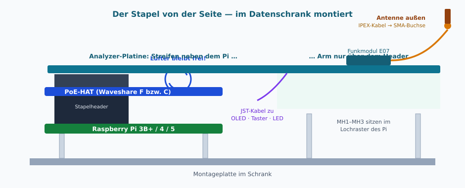
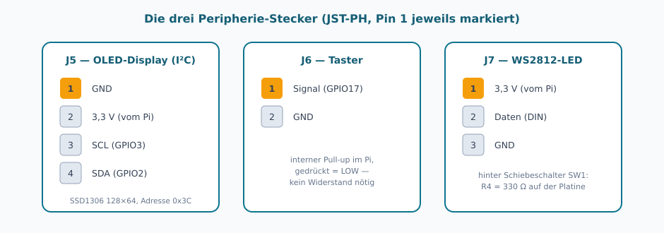
Die drei JST-Kabel nach diesen Belegungen crimpen (oder fertige Kabel entsprechend umpinnen). Die Nase der Stecker verhindert Verpolen — was passt, passt richtig. Softwareseitig sind Display, Taster und LED inzwischen fest in die Analyzer-Software integriert — kein zweiter Dienst, keine eigene Anleitung mehr nötig. Alles Weitere (Aktivieren, Farben, Anzeigeseiten) steht in Kapitel 18.
Dank Bootloader (Kapitel 7) braucht ein Firmware-Update später weder Ausbau noch USBasp — der Pi erledigt es selbst über die serielle Schnittstelle. Nur eines fehlt der Pi-UART: die Reset-Leitung, mit der avrdude den Chip normalerweise in den Bootloader schickt. Dafür hat die Platine die GPIO4-Reset-Strecke: Ein kurzer Low-Impuls auf GPIO4 wird über den Kondensator C8 als Reset-Puls an den Mikrocontroller weitergereicht.
Seit Software 0.0.4 flasht der Analyzer den 328P selbst — du lädst nur die HEX-Datei im Browser hoch:
Wer sehen will, was dabei technisch passiert — oder es ohne Weboberfläche braucht:
# 1. Analyse-Dienst anhalten (er belegt den Port) sudo systemctl stop asksin-analyzer # 2. avrdude starten — es wartet auf den Bootloader … avrdude -c arduino -p m328p -P /dev/asksin-hat -b 58824 -D \ -U flash:w:asksin-sniffer.ino.hex:i & # 3. … und sofort den Reset-Impuls geben: sleep 0.2 timeout 0.3 gpioset -c gpiochip0 4=0 || true # libgpiod 2.x (Bookworm) # bei älteren Systemen (libgpiod 1.x) stattdessen: # gpioset --mode=time --usec=300000 gpiochip0 4=0 wait # 4. Dienst wieder starten sudo systemctl start asksin-analyzer
Der Ablauf dahinter: Die fallende Flanke auf GPIO4 läuft durch C8 und zieht RESET für etwa eine Millisekunde auf Masse. Der Chip startet neu, der Bootloader lauscht eine Sekunde lang auf der seriellen Schnittstelle — und genau dort wartet schon avrdude mit der neuen Firmware.
-DNDEBUG, und AskSinPP macht daraus leere Ausgabemakros, über die
der Sniffer sein gesamtes Erzeugnis schickt. Die Datei lief einwandfrei und
sendete nie ein Zeichen. Größe, Adressen und Prüfsumme stimmten alle — sie
sagten nur nichts darüber, ob sie funktioniert. Warum das so lange unbemerkt
blieb und was jetzt dagegen geprüft wird, steht in Kapitel 8.3.Beide Wege oben verlangen eine HEX-Datei, im Firmware-Repo liegt aber nur der Quelltext. Das ist kein Versehen: Eine HEX-Datei gilt immer nur für eine bestimmte Einstellung von Takt und Baudrate. Wer sie mitliefert, liefert zwangsläufig die falsche für irgendjemanden — und im schlimmsten Fall eine, die überhaupt nicht spricht.
Man erzeugt sie also selbst. Das klingt nach mehr, als es ist: Es sind dieselben Schritte wie beim ersten Aufspielen (Kapitel 8) — nur dass am Ende nicht übertragen, sondern gespeichert wird.
Die .ino ist der Quelltext — lesbarer Text, den ein
Mensch geschrieben hat. Der Mikrocontroller versteht davon nichts. Beim
Kompilieren wird daraus Maschinencode, und die HEX-Datei ist die
Transportform dieses Codes: reine Zahlen, zeilenweise, mit Prüfsummen. Genau
das schiebt avrdude in den Speicher des ATmega328P.
Das erklärt auch, warum es keine allgemeingültige HEX-Datei gibt: Ob der Chip mit 8 oder 16 MHz läuft und mit welcher Baudrate er spricht, steckt fest im Maschinencode. Eine fremde Datei mit anderen Einstellungen ergibt ein Gerät, das entweder schweigt oder Buchstabensalat sendet.
github.com/ssbingo/asksin-sniffer-firmware
Code → Download ZIP, dann entpacken. Gebraucht wird der Ordner
asksin-sniffer vollständig — er enthält
neben der .ino auch protokoll.h und
protokoll.cpp (Kapitel 8.1)..ino öffnen (Doppelklick genügt).Strg+Alt+S).
Nicht „Hochladen" — es soll ja nichts übertragen werden,
die Platine steckt am Pi.Das ist die häufigste Stolperstelle, und sie kostet regelmäßig eine Viertelstunde Suchen:
build neben der
.ino, also etwa
asksin-sniffer/build/MiniCore.avr.328/asksin-sniffer.ino.hex..ino.Es entstehen immer zwei HEX-Dateien:
| Datei | nehmen? | warum |
|---|---|---|
asksin-sniffer.ino.hex | ja | nur das Programm |
…ino.with_bootloader.hex | nein | enthält zusätzlich den Bootloader — und genau der darf beim Update nicht überschrieben werden. Er ist es, der das Update überhaupt entgegennimmt. |
Zwei Fassungen desselben Quelltextes können sich um mehrere hundert Byte unterscheiden, ohne dass eine davon falsch wäre. Es genügt eine andere Fassung einer Bibliothek oder eine einzige andere Einstellung im Menü Werkzeuge.
Wir haben das ausprobiert: Drei Bauversuche mit denselben Board-Einstellungen ergaben 7 416, 7 490 und 7 734 Byte. Der Unterschied war am Ende eine einzige Menüzeile, nämlich Compiler LTO. Steht sie auf enabled, fasst der Übersetzer beim letzten Arbeitsschritt das ganze Programm zusammen und wirft heraus, was nie erreicht wird — beim unveränderten Original waren das 828 Byte.
Wie eng es zugeht, zeigt eine Gegenprobe: Schon AskSinPP 5.0.2 statt 5.0.3 — eine Nebenversion — ändert die Größe.
Wir haben aus dieser Beobachtung einmal den falschen Schluss gezogen und
den Bau festgenagelt, bis er byte-genau reproduzierbar war. Er war es — und
das Ergebnis war trotzdem unbrauchbar, weil MiniCore -DNDEBUG
setzt und damit sämtliche Ausgabe der Firmware entfernt (Kapitel 8.3).
Reproduzierbarkeit belegt, dass zweimal dasselbe
herauskommt. Sie belegt nicht, dass das Ergebnis taugt. Deshalb prüft
firmware/pruefe-hex.py heute den Inhalt: Die
Startkennung AskSin++ v muss als Text im Programmabbild stehen.
Das ist die Prüfung, auf die es ankommt — nicht die Größe.
Für den täglichen Gebrauch spielt die Größe ohnehin keine Rolle. Eine selbst kompilierte Datei mit den Einstellungen aus Kapitel 7.5 läuft einwandfrei, auch wenn sie ein paar hundert Byte abweicht. Entscheidend ist, dass sie die Ausgabetexte enthält — und dass sie deutlich über 6 922 Byte liegt, denn das ist die Größe des unveränderten Originals ohne unsere Erweiterungen.
Wer arduino-cli nutzt, bekommt die Datei in einem Aufruf und
weiß sofort, wo sie liegt:
arduino-cli compile \ --fqbn MiniCore:avr:328:variant=modelP,bootloader=uart0,\ clock=8MHz_external,BOD=2v7,eeprom=keep,LTO=Os_flto \ --output-dir ./hex \ asksin-sniffer
Danach liegt sie unter ./hex/asksin-sniffer.ino.hex.
Der Anhang LTO=Os_flto ist genau die Menüzeile aus dem
vorigen Abschnitt. Wer ihn weglässt, bekommt die Voreinstellung — und damit
eine größere Datei als die mitgelieferte.
Von PlatformIO ist an dieser Stelle abzuraten. Es bringt
eine eigene Werkzeugkette mit und übernimmt diese Einstellung nicht; das
Ergebnis weicht ab, ohne dass etwas fehlschlägt. Zum Kompilieren dieser
Firmware nimmt man die Arduino IDE oder arduino-cli.
Die Datei liegt jetzt auf dem PC, nicht auf dem Pi. Für den bequemen Weg (11.1) ist das genau richtig: Im Browser Info → Sniffer-Firmware öffnen, die Datei auswählen, flashen. Der Analyzer prüft sie vorher auf gültige Intel-HEX-Struktur — eine verwechselte oder halb heruntergeladene Datei wird also abgewiesen, bevor irgendetwas geschrieben wird.
Für den Handweg (11.2) muss sie erst auf den Pi, etwa mit
scp asksin-sniffer.ino.hex benutzer@asksin-analyzer-01:~.
Bevor du eine neue Firmware aufspielst, halte fest, wie sich die alte verhält. Sonst lässt sich hinterher nicht sagen, ob es besser geworden ist — man vergliche eine Messung mit einer Erinnerung.
Das klingt nach Umstand, ist aber eine Sache von einer Stunde Wartezeit und zwei Befehlen. Und es beantwortet später genau die Frage, die sonst unbeantwortbar bleibt: „War das vorher auch schon so?"
Der Analyzer schreibt jede Zeile mit, die vom Sniffer hereinkommt — mit Zeitstempel, bevor er sie auswertet. Gerade das, was er sonst wegwirft, ist hier wichtig: Boot-Meldungen, abgeschnittene Zeilen, Zeichensalat. Diese Fälle sind selten genug, dass man sie im Alltag übersieht, und häufig genug, dass sie in einer Stunde mehrfach auftreten.
Das Format ist schlichter Text, eine Zeile je Ereignis:
# asksin-mitschnitt 1 # begonnen 2026-08-03T09:12:00.000Z # geraet /dev/ttyAMA0 baud 58824 1754212320123 :5A; 1754212320873 :5A;
Kein eigenes Dateiformat, kein Programm nötig zum Hineinsehen:
tail, grep und wc -l tun es auch.
Ein Mitschnitt, den man nur mit dem passenden Werkzeug lesen kann, ist in fünf
Jahren nichts mehr wert.
Solange der Analyzer simulierte Daten erzeugt — weil noch keine Platine da ist oder der Schalter Demo gesetzt ist —, taugt der Mitschnitt nicht als Grundlinie. Die Simulation hält einen künstlich sauberen Takt, kennt keine Übertragungsfehler und keine Aussetzer. Gegen eine spätere Messung an echter Hardware gehalten, würde sie eine Verbesserung ausweisen, die es nie gab — und zwar in genau den drei Größen, auf die es ankommt.
Das kann nicht aus Versehen passieren: Die Herkunft steht in der Datei
(# demo ja), die Auswertung schreibt es in einem Kasten
darüber, und der Vergleich zweier Mitschnitte unterschiedlicher Herkunft wird
abgelehnt statt gerechnet.
Der Demo-Modus betrifft ausschließlich die Funktelegramme. Alles andere — Netzwerkeinstellungen, Firmware aufspielen, Updates, Protokoll — bleibt ganz normal bedienbar. Er ist dafür gedacht, wenn keine Platine steckt oder wenn man Funktionen ohne echtes Homematic-Netz ausprobieren möchte.
Eine Probeaufzeichnung im Demobetrieb ist trotzdem sinnvoll: Sie zeigt, dass der Weg funktioniert — Konfiguration, Neustart, Datei am erwarteten Ort. Das will man wissen, bevor die Platine kommt, und nicht danach.
Mehr ist es nicht. Der Analyzer läuft dabei ganz normal weiter — Weboberfläche, Datenbank, Alarme, alles wie sonst; ein Neustart ist nicht nötig. Während der Aufzeichnung zeigt die Seite laufend, wie viele Zeilen schon geschrieben sind.
Die Datei landet neben der Datenbank unter
/var/lib/asksin-analyzer/mitschnitt.txt. Ein erneuter Start hängt
hinten an, statt sie zu überschreiben — ein Neustart des Dienstes mitten in
der Aufzeichnung verliert also nichts.
Die Wahl überlebt einen Neustart: Wer das Beenden vergisst, findet die Aufzeichnung am nächsten Tag noch laufend vor. Das ist Absicht — die umgekehrte Überraschung, eine über Nacht heimlich beendete Grundlinie, wäre die schlimmere.
Wird die Aufzeichnung unterbrochen — durch einen Neustart, ein Update oder weil jemand zwischendurch ausgeschaltet hat — vermerkt die Datei das als Nahtstelle. Die Auswertung zählt die Pause an dieser Stelle ausdrücklich nicht als Lücke, weist die Naht aber aus.
Das steht hier, weil es beim ersten Probelauf tatsächlich passiert ist: 23 Sekunden zwischen dem Ende der einen und dem Start der nächsten Aufzeichnung erschienen als Funkausfall, und der Rauschtakt meldete einen Ausreißer von 23 Sekunden. Bei einer echten Grundlinie hätte man das der Firmware angelastet.
Wer den Analyzer ohne Weboberfläche einrichtet, kann die Aufzeichnung auch
in /etc/asksin-analyzer/config.json vorgeben:
{
"mitschnitt": { "aktiv": true, "maxMiB": 256 }
}
Das ist nur die Voreinstellung beim Start. Sobald der Schalter in der Weboberfläche einmal benutzt wurde, hat dessen Stand Vorrang — sonst käme nach jedem Neustart der alte Zustand zurück, und der Schalter im Browser wäre eine Lüge.
Rund 90 Zeilen je Minute ergeben etwa 4 MB am Tag. Das ist wenig, aber es sind Schreibvorgänge, und bei einem Gerät, das jahrelang unbeaufsichtigt durchläuft, will man die nicht ohne Anlass. Die Größe ist außerdem gedeckelt (256 MB); danach hört die Datei auf zu wachsen und meldet das beim Beenden.
Es geht auch ohne Konfigurationsdatei — dann muss der Analyzer aber stehen. Eine serielle Schnittstelle verträgt nur einen Leser:
sudo systemctl stop asksin-analyzer node core/bin/mitschnitt.ts aufzeichnen /tmp/vorher.txt --dauer 60 sudo systemctl start asksin-analyzer
Abbruch jederzeit mit Strg+C — das bis dahin
Aufgezeichnete bleibt erhalten.
Die Aufzeichnung liegt auf dem Pi, ausgewertet wird sie am PC. Auf derselben
Seite steht dafür Aufzeichnung herunterladen — der Browser speichert
die Datei ab, kein scp nötig.
node core/bin/mitschnitt.ts auswerten mitschnitt.txt
Drei Zahlen sind dabei die wichtigen:
| Größe | Was sie bedeutet |
|---|---|
| Rauschtakt | Der Sniffer meldet alle 750 ms den Empfangspegel. Dieser Takt hängt an nichts als der Firmware — nicht am Funkverkehr, nicht an der CCU, nicht am Wetter. Deshalb ist er der ehrlichste Gesundheitswert, den wir haben. Wird er unruhig, hängt das Programm irgendwo, und zwar lange bevor Telegramme fehlen. |
| Lücken | Zeiträume ohne jede Zeile. Vorsicht bei der Deutung: Eine Lücke heißt nicht zwingend, dass etwas verloren ging — vielleicht war einfach Funkstille. Beides zu unterscheiden ist heute unmöglich, und genau das soll die laufende Nummer in einer künftigen Firmware ändern. |
| Verworfene | Zeilen, die nicht zu deuten waren, aufgeschlüsselt nach Grund. Heute die einzige Spur von Übertragungsfehlern, die wir überhaupt sehen. |
node core/bin/mitschnitt.ts vergleichen /tmp/vorher.txt /tmp/nachher.txt
Das Werkzeug stellt beide nebeneinander und schreibt dazu, was besser und was schlechter geworden ist. Bewertet wird dabei nur, was tatsächlich von der Firmware abhängt.
Telegrammzahl und Pegel stehen mit einem Sternchen daneben und werden nicht bewertet: Sie hängen davon ab, was im Haus gerade funkt. Zwei Aufzeichnungen an verschiedenen Tagen sind darin nicht vergleichbar, und eine höhere Telegrammzahl wäre kein Verdienst der neuen Firmware, sondern vielleicht nur ein Rollladen mehr. Sie stehen trotzdem in der Tabelle, damit man sieht, ob die beiden Zeiträume überhaupt ähnlich belebt waren — hätte der eine dreimal so viel Verkehr wie der andere, taugte auch der Rest des Vergleichs wenig.
Hat sich eine der belastbaren Größen verschlechtert, endet der Befehl mit einem Fehlercode. So lässt er sich in einen automatischen Ablauf hängen, ohne dass jemand die Tabelle lesen muss.
Seit August 2026 gibt es eine zweite Firmware für den Sniffer. Sie stammt aus demselben Ursprung, kann aber vier Dinge, die das Original offenließ.
| Sie kann … | Wozu das gut ist |
|---|---|
| sagen, wer sie ist | Nach einem Firmware-Update war bisher nicht feststellbar, ob es überhaupt gegriffen hat — außer am veränderten Verhalten. Jetzt steht die Fassung in der Weboberfläche. |
| ihre Zeilen zählen | Ging eine Zeile verloren, sah der Analyzer schlicht weniger Telegramme — und hielt das für Funkstille. Beides war nicht zu unterscheiden. Jetzt wird gerechnet: Fehlt zwischen 0041 und 0045 etwas, sind es genau drei. |
| ihre Zeilen sichern | Kippte unterwegs ein Zeichen, entstand mit etwas Pech eine gültige Zeile mit falschem Inhalt — ein Gerät, das es nie gab. Jetzt fällt das auf. |
| ihr Funkmodul prüfen | Ein totes CC1101 sah aus wie eine ruhige Funkstrecke. Man suchte an der Antenne statt am Steckverbinder. |
Nach dem Einschalten verhält sich die neue Firmware Zeichen für Zeichen wie das Original. Die Erweiterungen schaltet der Analyzer erst ausdrücklich frei — und nur, wenn er sie versteht.
Das ist mit Absicht so herum gebaut. Wären die Erweiterungen von vornherein an, würde ein Analyzer mit älterer Software nach dem Aufspielen jede Zeile verwerfen. Das Fehlerbild wäre „es kommt nichts mehr an" — bei völlig tadelloser Funkstrecke, also der denkbar irreführendste Hinweis.
Die Originalfirmware liegt weiterhin bei und lässt sich jederzeit wieder aufspielen. Beide Fassungen laufen mit demselben Analyzer.
Unter Info → Sniffer-Firmware erscheint ein Satz zum Zustand — und zwar auch dann, wenn alles in Ordnung ist:
| Meldung | Bedeutung |
|---|---|
| Firmware und Analyzer passen zueinander | Alles gut. Verlorene Zeilen werden erkannt. |
| Es läuft die Originalfassung | Kein Fehler. Sie arbeitet einwandfrei, kann nur nichts über Verluste sagen. |
| Das Funkmodul antwortet nicht | Hier ist wirklich etwas kaputt. Sitz des CC1101 und die Lötstellen der SPI-Leitungen prüfen — nicht die Antenne. |
| Zuerst den Analyzer aktualisieren | Die Firmware ist neuer als der Analyzer. Es geht nichts verloren; sie bleibt so lange im kompatiblen Betrieb. |
Warum auch der gute Fall ausgesprochen wird: Schweigen wäre mehrdeutig. „Geprüft und in Ordnung" sähe genauso aus wie „konnte nicht prüfen" — und wer wissen will, ob zwei Fassungen zusammenpassen, braucht eine Antwort, nicht das Ausbleiben einer Warnung. Dieselbe Überlegung steht hinter der Versionsprüfung zum ioBroker-Adapter.
Läuft die erweiterte Fassung, stehen dort zusätzlich Zeilen geprüft und davon verloren. Die Zähler beginnen bei jedem Verbindungsaufbau neu.
Ein paar verlorene Zeilen am Tag sind unauffällig. Steigt der Anteil über etwa ein Prozent, lohnt ein Blick auf die Leitung: zu lange Strippen zum HAT, schlechte Masseverbindung, oder eine Baudrate, die nicht zum Quarz passt (Kapitel 23).
Beim Aufbau ist die Platine oft fertig bestückt, während das Funkmodul noch fehlt — es kommt aus China und braucht Wochen. Elektrisch ist das unbedenklich: Die Baugruppe läuft durchgängig auf 3,3 V, und der freie Steckplatz stört niemanden.
Sinnvoll ist es außerdem, denn alles außer dem Funkempfang lässt sich damit bereits prüfen: Spannungsregler, Resonator, Fuses, Bootloader, die serielle Strecke zum Pi, der Dienst, die Weboberfläche. Wer das vor dem Löten des Moduls erledigt, sucht später nicht zwei Fehler gleichzeitig.
Unsere Fassung erkennt das fehlende Modul selbst und sagt es beim Start:
:!CC,--;
Statt einer Chip-Version stehen dort zwei Striche. Der Analyzer deutet das und schreibt in der Übersicht hin, dass kein Funkmodul antwortet — statt eine leere Telegrammliste zu zeigen, bei der man rätselt, ob gerade nichts funkt oder etwas kaputt ist.
while (digitalRead(PIN_SPI_MISO));. Steckt kein Modul, treibt
niemand diese Leitung; sie flottiert, liest sich je nach Einstreuung hoch, und
der Sketch bleibt im setup() stehen — noch bevor er ein einziges
Zeichen ausgegeben hat. Von außen ist das von einer defekten Platine nicht zu
unterscheiden. Unsere Fassung wartet höchstens fünf Millisekunden, merkt sich
das Ergebnis und läuft weiter.:!CC,--;. Damit die
beiden Startzeilen nicht längst verpufft sind, während des Mithörens einmal
S1 drücken.Ist das Funkmodul später eingelötet, meldet die Firmware beim nächsten Start
statt der Striche die Chip-Version, üblicherweise :!CC,14;. Damit
ist der Steckverbinder in einem Schritt mitgeprüft.
Die Software auf dem Pi ist ein einziger, dauerhaft laufender Dienst
(analyzerd, per systemd überwacht und bei Absturz automatisch neu
gestartet). Innen ist er eine Kette klar getrennter Bausteine:
| Baustein | Aufgabe |
|---|---|
| Serial-Ingest | Liest den Zeilenstrom des Sniffers mit 58 824 Baud. Ein Watchdog nutzt aus, dass der Sniffer alle 750 ms eine Rauschzeile schickt: bleibt die Leitung still, gilt sie als tot und wird automatisch neu aufgebaut (mit ansteigenden Wartezeiten). Ein voller Puffer verwirft die ältesten Zeilen — Live-Daten sind wichtiger als lückenlose Historie. |
| Parser | Zerlegt jede Zeile in ihre Felder, prüft Hex-Alphabet, Längenbyte und Pegel-Plausibilität. Kaputte Zeilen werden gezählt statt verschluckt — steigende Fehlzähler sind ein Frühwarnsignal (z. B. driftende Baudrate). |
| Statistik | Duty-Cycle je Sender über ein gleitendes Stundenfenster (formelgleich mit dem etablierten AskSinAnalyzerXS), Grundrauschen geglättet, Telegrammrate, RSSI je Gerät. |
| Datenbank | SQLite direkt im Node.js eingebaut — keine Zusatzsoftware. Einzeltelegramme (30 Tage), Rauschwerte je Minute (90 Tage), Stundensummen je Gerät (1 Jahr); die Aufbewahrung räumt täglich automatisch auf, die Datenbank kann also nicht endlos wachsen. |
| Namensauflösung | Holt stündlich die Geräteliste von der CCU und cacht sie als Datei — nach einem Neustart sind die Namen sofort da, auch wenn die CCU gerade schläft. |
| API + Weboberfläche | Eine REST-API liefert alles als JSON; dieselbe API bedient die eingebaute Weboberfläche (Kapitel 13), den Verbund (Kapitel 17) und den ioBroker-Adapter (Kapitel 20). Zusätzlich gibt es den Kompatibilitäts-Endpunktsatz der originalen AskSinAnalyzer-Web-App. |
stty, Datenbank über das eingebaute
node:sqlite, I²C/SPI über Bordwerkzeuge. Was nicht installiert
wird, kann nicht kaputtgehen, keine Sicherheitslücke einschleppen und keine
Update-Kette blockieren — bei einem Gerät, das jahrelang unbeaufsichtigt im
Schrank läuft, ist das Gold wert.| Teil | Lizenz | Warum |
|---|---|---|
| Core-Dienst (Analyse) | CC BY-NC-SA | Parser-/Formel-Herkunft aus den Analyzer-Vorprojekten |
| Weboberfläche | MIT | kompletter Eigenbau (Vue 3 + ECharts) — nur der API-Vertrag wurde übernommen |
| ioBroker-Adapter | MIT | eigenes Repo, spiegelt nur States, keinerlei Analyse-Logik |
| Pfad | Inhalt |
|---|---|
/opt/asksin-analyzer | die Software (Git-Arbeitskopie) |
/etc/asksin-analyzer/config.json | Grundkonfiguration (Installer/Experten) |
/var/lib/asksin-analyzer/ | Datenbank, Geräteliste-Cache, alle über die Weboberfläche gesetzten Einstellungen, Update-Protokolle |
Alles, was du in der Weboberfläche einstellst (Standort,
Verbund-Peers, Demo, Statusanzeige, Langzeitdaten), landet in
/var/lib/asksin-analyzer/ und überlebt Updates wie Neustarts.
Ohne Zentrale zeigt der Analyzer Geräte mit ihrer Funkadresse an:
1A2B3C statt Wohnzimmer Fenster. Er funktioniert so
vollständig — nur eben unleserlich.
Damit Namen erscheinen, braucht er die Geräteliste Ihrer CCU. Und die gibt die CCU nicht von sich aus heraus. Sie muss einmal dazu aufgefordert werden, und genau das ist der Schritt, den fast alle übersehen.
Die Adresse der CCU ist eingetragen, alles sieht richtig aus — und trotzdem stehen überall nur Hexzahlen. Dann fehlt die Systemvariable auf der CCU. Der Verbindungstest sagt Ihnen das im Klartext, statt Sie raten zu lassen.
In der Weboberfläche unter Einstellungen → Standort & Zentrale steht neben Speichern der Knopf CCU-Verbindung testen. Er prüft der Reihe nach:
| Meldung | Was sie bedeutet |
|---|---|
| 17 Geräte von der CCU gelesen | Alles in Ordnung. Zur Bestätigung nennt der Test ein paar Ihrer Gerätenamen — dann wissen Sie, dass es die richtige Anlage ist. |
| Keine CCU eingetragen | Kein Fehler. Der Analyzer läuft mit Funkadressen weiter. |
| CCU nicht erreichbar | Netzwerkfrage: Name falsch, CCU aus, oder eine Firewall dazwischen. Der Test unterscheidet die Fälle und nennt den passenden Schritt. |
| Antwort kommt nicht von einer CCU | Unter der Adresse antwortet etwas anderes. Adresse prüfen. |
| Die CCU antwortet — die Systemvariable fehlt | Der häufigste Fall. Die Verbindung steht; auf der CCU fehlt nur das Skript. Weiter unten. |
| Die Liste ist … Tage alt | Das Skript lief einmal und seither nicht mehr. Neu angelernte Geräte fehlen. |
Bei den beiden letzten Fällen klappt die Anleitung direkt in der Weboberfläche auf — Sie müssen dieses Handbuch dafür nicht aufschlagen.
Keine Geräte, keine Programme, keine Kanäle. Das Skript liest die Geräteliste und legt eine einzige Systemvariable an. Wer unsicher ist: Es lässt sich beliebig oft wiederholen, ohne Schaden.
ccu/geraeteliste-erzeugen.txt aus dem Projekt öffnen.
Den gesamten Inhalt markieren
(Strg+A), kopieren
(Strg+C).Strg+V). Es müssen rund 115 Zeilen sein.{"created_at": beginnt. Das ist Ihre
Geräteliste. Sie sieht unleserlich aus — das ist richtig so, sie
ist für den Analyzer bestimmt, nicht für Menschen.Die Liste ist eine Momentaufnahme. Lernen Sie später ein Gerät an, taucht es im Analyzer nicht mit Namen auf — bis das Skript erneut läuft.
Legen Sie deshalb auf der CCU ein Programm an, das es täglich ausführt:
Fehlt dieses Programm, meldet der Verbindungstest im Analyzer nach einem Tag „Die Liste ist … Tage alt". Das ist der Hinweis, dass genau dieser Schritt noch aussteht.
Das Skript stammt aus dem Ursprungsprojekt
AskSinAnalyzer (© jp112sdl) und steht unter CC BY-NC-SA 3.0 — also
nicht unter der MIT-Lizenz der Weboberfläche. Es liegt unverändert bei;
Einzelheiten in ccu/README.md. Für gewerbliche und behördliche
Nutzung ist es nicht frei.
Die Weboberfläche ist die Schaltzentrale des Analyzers — erreichbar unter
http://<pi-ip>:8080, ohne App, ohne Cloud. Sie besteht aus fünf
Ansichten (Übersicht, Telegramme, Verbund, Einstellungen, Info) und einer
Kopfzeile, die auf jeder Seite dieselben Informationen trägt.
Die Liste füllt sich von selbst (neueste oben, maximal 500 im Speicher). Jede Zeile zeigt Zeit, RSSI (farbig: grün ≥ −65 dBm, orange bis −85, rot darunter), Absender und Empfänger (aufgelöster Name plus Hex-Adresse), Länge, laufende Nummer, Typ (z. B. WEATHER, CONFIG — HmIP-Typen blau), Flags (z. B. BURST, BIDI) und die Roh-Nutzdaten. Werkzeuge: Textfilter (sucht in Namen, Adressen und Typ), Pause (friert die Anzeige ein, ohne Daten zu verlieren) und Leeren.
Jedes Panel dieser Seite hat sein eigenes Kapitel; hier der Überblick:
| Panel | Inhalt | Details |
|---|---|---|
| Verbund | weitere Analyzer verknüpfen/entfernen | Kapitel 17 |
| Netzwerk | DHCP/Statisch, Hostname, NTP — mit Aussperr-Schutz | Kapitel 16 |
| Standort & Zentrale | Standortname (reines Etikett!) und CCU-Adresse | — |
| Zugriff | Auth-Token dieses Browsers | Kapitel 21 |
| Status-LED & OLED | Zubehör aktivieren, Helligkeit | Kapitel 18 |
| Langzeitdaten | InfluxDB-Anbindung | Kapitel 19 |
| Demo-Modus | simulierte Anlage ein/aus | Kapitel 14 |
| Daten | Tages-CSV herunterladen, Datenbank leeren, Dienst neu starten | — |
Alle Änderungen wirken sofort (nur der Demo-Schalter startet den Dienst kontrolliert neu) und überleben Neustarts wie Updates.

Kacheln mit Core-Version, Laufzeit, Datenbankgröße und Host-Daten; darunter die Empfangszähler seit Dienststart — besonders wertvoll die Zeile „verworfen": steigt sie plötzlich, stimmt etwas an der seriellen Strecke. Es folgen Software-Update und Sniffer-Firmware (Kapitel 15/11) und die Herkunftsnennung der Original-Projekte, auf denen dieser Analyzer aufbaut.
Der Demo-Modus lässt den kompletten Analyzer laufen, ohne dass eine Platine steckt oder eine Homematic-Zentrale existiert — ideal zum Kennenlernen, zum Vorführen und um die Weboberfläche zu erkunden, während die Platine noch beim Fertiger liegt.
Einstellungen → Demo-Modus → einschalten, Rückfrage bestätigen — der Dienst startet neu (die Seite verbindet sich nach wenigen Sekunden von selbst), und in der Kopfzeile erscheint die orange DEMO-Plakette. Ausschalten geht genauso; danach liest der Analyzer wieder die echte Hardware.
Die Simulation setzt am untersten Ende an: Sie erzeugt exakt die Zeilen, die der echte Sniffer über die serielle Schnittstelle schicken würde — Telegramme, die 750-ms-Rauschzeilen, sogar gelegentliche Störimpulse. Parser, Statistik, Datenbank, API und Weboberfläche laufen dabei unverändert — was du im Demo-Modus siehst, ist die echte Software bei der Arbeit, nur die Funkwellen sind erfunden.
Die Demo-Anlage umfasst rund 15 Geräte mit Charakter: Wettersensoren, Heizkörperthermostate, Bewegungsmelder (mit Burst-Telegrammen), HmIP-Fensterkontakte, eine Strommess-Steckdose — und absichtlich ein „defektes" Gerät (Defekt_BWM Carport (klemmt)), das dauersendet und nach kurzer Zeit die Duty-Cycle-Liste mit roter Warnfarbe anführt. So siehst du auch die Alarmseite der Anzeige.
analyzer-demo.db) mit kurzer Aufbewahrung. Deine echten
Aufzeichnungen werden weder gelesen noch verändert — nach dem Ausschalten
ist alles exakt wie vorher.Eine Minute nach jedem Dienststart und danach alle 24 Stunden vergleicht der Analyzer seinen Software-Stand mit dem Projekt auf GitHub. Gibt es etwas Neues, erscheint in der Kopfzeile die pulsierende 🔔 Update-Plakette — auf jeder Seite, nicht zu übersehen. Ein Klick darauf führt zur Info-Seite.
Das Update ist atomar und rückrollbar gebaut: Die neue
Weboberfläche wird erst vollständig gebaut und dann in einem Zug getauscht;
nach dem Neustart prüft ein Gesundheits-Check 30 Sekunden lang, ob der
Dienst mit dem neuen Stand sauber antwortet. Tut er das nicht, stellt
das Update selbstständig den vorherigen Stand wieder her — Software
und Oberfläche. Ein misslungenes Update kann dir den Analyzer also nicht
lahmlegen. Protokolle liegen unter
/var/lib/asksin-analyzer/update.log, der Fortschritt übersteht
sogar den Neustart des Dienstes.
Unter Einstellungen → Netzwerk verwaltest du die Netzwerkkonfiguration des Pi komplett im Browser — DHCP oder statische Adresse, Gateway, DNS, Hostname und NTP-Server. Die Seite zeigt zuerst nur den Ist-Zustand (bei DHCP inklusive der zugewiesenen Werte); geändert wird erst, wenn du ausdrücklich „Übernehmen" klickst.
Wer die IP-Adresse ändert, sägt am Ast, auf dem seine Browser-Verbindung sitzt. Deshalb gelten neue Netzwerkeinstellungen zunächst nur auf Probe:
de.pool.ntp.org. Synchrone Uhren sind
Pflicht, sobald mehrere Analyzer im Verbund arbeiten — der Verbund warnt bei
Abweichungen über einer Sekunde (Kapitel 17).Ab zwei Analyzern beginnt der eigentliche Zauber dieses Projekts: Jedes Funktelegramm wird meist von mehreren Standorten gleichzeitig gehört — mit unterschiedlicher Stärke. Aus genau diesen Unterschieden entsteht die Funk-Landkarte des Hauses.

Jeder Analyzer ist von Haus aus verbundfähig. „Master" wird schlicht der, bei dem du die anderen einträgst:
http://192.168.1.72:8080), optional Name und dessen Auth-Token
(nur fürs Flotten-Update nötig), Verknüpfen.Die Änderung wirkt sofort; der eigene Standort erscheint automatisch als erste Kachel. Hinterlegte Tokens werden nie wieder angezeigt.
Je Standort eine Kachel: Sniffer-Status, Telegramme/min, Grundrauschen, höchster Duty-Cycle, Software-Version — plus Plaketten für Demo-Modus und verfügbare Updates und ein Link direkt in die Weboberfläche des jeweiligen Analyzers. Ein ausgefallener Standort erscheint als „nicht erreichbar", stört aber die Übersicht nicht. Weicht die Uhr eines Standorts mehr als eine Sekunde ab, warnt die Kachel („NTP prüfen!") — denn die Telegramm-Zusammenführung braucht synchrone Uhren.
Zeile = Funkgerät, Spalte = Standort, Zelle = geglätteter Empfangspegel in Farbe; ★ markiert den besten Empfang, „—" heißt „an diesem Standort nie gehört". Damit beantwortest du auf einen Blick: Wo sind Funklöcher? Welcher Analyzer „besitzt" welches Gerät? Wohin gehört die nächste Antenne? Der Knopf CSV herunterladen exportiert die Matrix für die Planung am Schreibtisch.
Gleicher Absender + gleiche laufende Nummer + gleicher Typ und Länge innerhalb von ±1,5 Sekunden = ein Funkereignis. Die Liste zeigt jedes Telegramm genau einmal, mit farbigen Chips je Standort: Keller (−62) DG (−88). So siehst du je Ereignis sofort, wer es wie gut gehört hat.
Der Knopf Alle Analyzer aktualisieren… rollt ein Software-Update über alle Standorte aus — bewusst vorsichtig: nacheinander, jeder Analyzer erst nach bestandenem Gesundheits-Check des vorherigen. Scheitert ein Schritt, stoppt der Lauf (der betroffene Analyzer hat lokal längst automatisch zurückgerollt, Kapitel 15) und die restlichen bleiben unangetastet. Der Master aktualisiert sich zum Schluss. Für Peers mit Token-Pflicht muss deren Token beim Verknüpfen hinterlegt sein.
Mit dem Zubehör an J5–J7 (Anschluss: Kapitel 10.3, SW1-Hinweis beachten!) zeigt der Analyzer seinen Zustand direkt am Gerät — ein Blick in den Schrank genügt.
Entweder im Installer („Status-LED und OLED einrichten? Ja") oder jederzeit
nachträglich: Einstellungen → Status-LED & OLED — LED und OLED
einzeln schaltbar, Helligkeitsregler, sofort wirksam. Einzige Voraussetzung:
I²C/SPI müssen einmal freigeschaltet sein (macht der Installer; nachträglich
sudo raspi-config → Interface Options). Fehlt etwas, zeigt die
Übersicht ehrlich „LED gestört"/„OLED gestört" samt Fehlertext.
Das Display wird von einem eigenen Dienst gezeichnet
(asksin-analyzer-oled), der dieselben Bibliotheken verwendet wie
das Vorbildprojekt Status-LED-OLED: adafruit_ssd1306 als Treiber,
Pillow zum Zeichnen und DejaVuSans-Bold als Schrift.
Der Installer richtet ihn mit ein. Schlägt das fehl, lässt es sich einzeln
nachholen, ohne den ganzen Installer:
sudo /opt/asksin-analyzer/deploy/oled-einrichten.sh 32 Vorgabe ist
128 × 32 — die Adafruit PiOLED und die Einstellung des
Vorbilds. 0,96-Zoll-Module sind meist 128 × 64; dann beim
Installer „2" wählen bzw. das Skript mit 64 aufrufen.
Der Unterschied ist nicht kosmetisch: Multiplex-Verhältnis und COM-Pin-Lage der Init-Sequenz hängen daran. Mit den falschen Werten zeigt das Panel ein verdoppeltes, unleserliches Bild — es sieht dann so aus, als sei die Schrift zu klein oder das Display defekt.
Auf Pi 3 und Pi 4 läuft die LED über PWM, und
das braucht dreierlei, was nur der Installer einrichtet: die Bibliothek
rpi_ws281x, den Root-Hilfsdienst asksin-analyzer-led
und abgeschaltetes Onboard-Audio (PWM braucht die Hardware
exklusiv).
Wer die Betriebsart nachträglich in den Einstellungen von SPI auf PWM
umstellt, ändert nur die Einstellung — der Unterbau fehlt dann, der Analyzer
schreibt die Farbe brav nach /run/asksin-analyzer/led-farbe, und
es liest sie niemand. Von außen: dunkle LED, keine Fehlermeldung.
Nachholen lässt sich das mit einem Befehl:
sudo bash /opt/asksin-analyzer/deploy/led-pwm-einrichten.sh
Danach ist ein Neustart nötig, wenn das Skript das Onboard-Audio abgeschaltet hat. Und der Schiebeschalter SW1 auf der Platine muss auf PWM stehen — sonst ist die Datenleitung nicht durchgeschaltet. Seit Fassung 0.15.7 meldet der Analyzer den fehlenden Hilfsdienst von selbst.
Bis einschließlich 0.15.8 gab es hier eine zweite
Ursache mit demselben Erscheinungsbild: Der Analyzer schreibt die Farbe nach
/run/asksin-analyzer/led-farbe, der Hilfsdienst las aber nur den
Ausweichpfad /var/lib/asksin-analyzer/led-farbe. Er wartete damit
auf eine Datei, die es im Normalbetrieb nie gab. Ab 0.15.9
sucht er beide Orte ab und schreibt ins Journal, wenn er keinen davon
findet.
Bis einschließlich 0.15.7 stellte der Analyzer den SPI-Takt mit
spi-config ein — einem eigenen Programm, das sich danach beendet.
Der Takt gehört im Linux-Kern aber nicht dem Gerät, sondern dem
geöffneten Dateideskriptor: Sobald der letzte Benutzer die
Datei schließt, setzt der Treiber ihn auf den Höchstwert des Reglers zurück.
Auf einem Pi 5 sind das 125 MHz statt der nötigen 2,4 MHz.
Der komplette Rahmen ist dann nach 0,6 µs übertragen; die WS2812 erkennt darin keine Daten und bleibt dunkel. Das Tückische daran: Auf der Datenleitung liegt ein Signal. Wer mit dem Multimeter an J7 misst, findet alles in Ordnung und sucht anschließend an der Hardware — an SW1, am Kabel, an der LED. Dort ist nichts zu finden.
Nachweisen ließ es sich nur bei laufendem Dienst:
sudo spi-config -d /dev/spidev0.0 -q
Meldet die Ausgabe speed=125000000,
ist es dieser Fehler. Ab 0.15.8 behoben: Der Helfer
deploy/ws2812-spi.py setzt den Takt und bleibt geöffnet, solange
die Anzeige läuft. Er liest den Wert außerdem zurück und bricht mit einer
Meldung im Journal ab, wenn er um mehr als 10 % danebenliegt — statt still
Falsches auf die Leitung zu schreiben.
| Farbe/Muster | Bedeutung |
|---|---|
| 🟢 grün, ruhig | alles in Ordnung |
| 🔵 blau, atmend | Software-Update verfügbar |
| 🟠 orange, ruhig | Demo-Modus aktiv |
| 🟡 gelb, langsam blinkend | Persistenz-Fehler (Datenbank prüfen) |
| 🔴 rot, ruhig | Sniffer getrennt — keine Daten von der Platine |
| 🔴 rot, schnell blinkend | Duty-Cycle-Alarm: ein Gerät verbraucht ≥ 80 % seines Sendekontingents |
Die Reihenfolge ist eine Prioritätsleiter — es leuchtet immer der wichtigste Zustand.
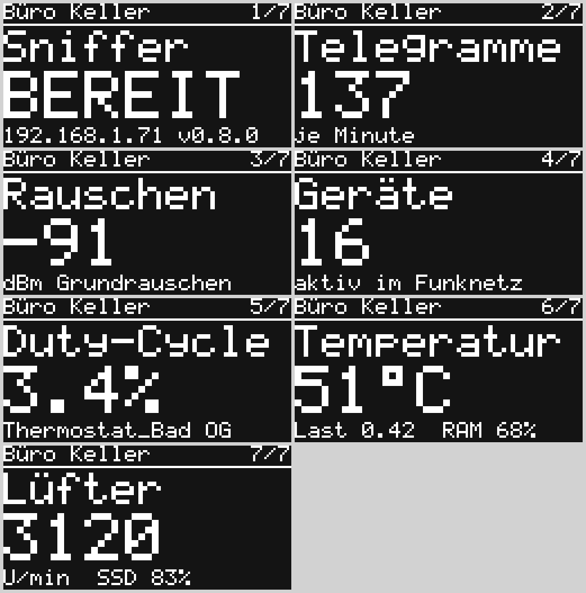
Der Aufbau folgt dem Vorbild: kleine Beschriftung oben links, darunter der Wert — waagerecht zentriert und in der größten Schrift, die noch in die Breite passt. Kopf- und Fußzeilen gibt es bewusst nicht; sie müssten in der kleinen Schrift stehen und wären auf einem 0,96-Zoll-Panel nicht mehr zu entziffern.
Die Reihenfolge beim Blättern:
| Seite | zeigt |
|---|---|
| 1 Standort | der Anzeigename dieses Analyzers |
| 2 Sniffer | BEREIT / GETRENNT / DEMO |
| 3 Funkstatus | BidCoS und Zigbee als Sinnbilder, je mit Haken oder Kreuz — siehe unten |
| 4 Telegramme | je Minute |
| 5 Rauschen | Grundrauschen in dBm |
| 6 Geräte | aktive Funkgeräte |
| 7 Duty-Cycle | Spitzenwert in Prozent |
| 8 … ! Gerätename | je Dauersender eine eigene Seite — siehe unten |
| Version | Softwarestand |
| IP · MAC · Host | Netzwerk |
| CPU · RAM · Up | Temperatur und Last, Speicher, Laufzeit |
| Disk · Fan | freier Platz, Lüfterdrehzahl — nur wenn vorhanden |
| letzte Seite | Übersicht: IP, CPU, RAM, Sniffer — vier Zeilen wie im Vorbild |
Auf dem Master steht rechts in der Kopfzeile ein Knopf, der die Grafana-Oberfläche in einem neuen Tab öffnet. Er erscheint nur dort, und nur wenn Grafana auf diesem Gerät auch installiert ist — ein Knopf, der auf eine Seite führt, die es nicht gibt, ist schlechter als keiner.
Warum dort kein echtes Grafana-Logo steht. Das Logo ist eine Marke von Grafana Labs. Es in dieses öffentliche Repository zu kopieren hiesse, fremdes Markenmaterial unter unserer Lizenz mitzuverteilen — dieselbe Überlegung, aus der hier auch sonst keine fremden Symbolsätze und keine Produktfotos mitgeliefert werden. Gezeichnet ist deshalb ein eigenes Zeichen in Grafanas Orange, zusammen mit dem Namen.
Wer das echte Logo möchte, braucht dafür
keine Codeänderung: Eine Datei
webui/public/grafana-logo.svg ablegen, neu bauen — sie wird
bevorzugt. Der Bezug der Datei und die Einhaltung der Markenrichtlinien
liegen dann beim Betreiber, und das ist die richtige Stelle dafür.
In der Oberfläche stehen zwei Einfärbungen nebeneinander, und sie meinen absichtlich nicht dasselbe:
| Wo | bewertet | beantwortet |
|---|---|---|
| RSSI-Spalte der Telegrammliste und die Punkte im Übersichtsdiagramm | den einzelnen Pegel in dBm | „Wie laut kam dieses Telegramm an?" |
| Empfangsbalken in der Kopfzeile | den Störabstand | „Wie gut hört dieser Analyzer überhaupt?" |
Die Punkte des Diagramms tragen seit Fassung 1.0.4 dieselben drei Stufen wie die Liste — gut ab −65 dBm, mittel bis −85, darunter schwach. Beide holen die Schwellen aus derselben Tabelle; eine maschinelle Prüfung schlägt an, wenn eine der beiden Stellen eigene Zahlen bekommt.
Über den Punkten liegt die Linie des Grundrauschens. Der Abstand eines Punktes zu dieser Linie ist genau der Störabstand, aus dem sich der Balken speist — beide Bewertungen sind also im selben Bild zu sehen.
Neben jedem der beiden Funknetze steht ein Balken mit fünf Stufen — wie am Mobiltelefon. Er zeigt nicht den blossen Pegel, sondern für BidCoS den Störabstand: Nutzsignal minus Grundrauschen.
Das hat einen Grund, der im Datenblatt des Funkmoduls steht. Der CC1101 liefert einen Rohwert, den die Firmware nach dieser Vorschrift in dBm umrechnet:
RSSI[dBm] = Rohwert / 2 − 74
Die 74 dB sind ein typischer Wert des Datenblatts, kein für dieses eine Bauteil gemessener. Zwei Module derselben Bauart können denselben Sender deshalb mit leicht verschiedenen dBm ausweisen, ohne dass eines schlechter empfängt. Ein Balken am blossen dBm würde diese Bauteilstreuung anzeigen und als Empfangsunterschied ausgeben.
In der Differenz zum Grundrauschen — vom selben Modul gemessen — steckt der Versatz in beiden Summanden und kürzt sich weg. Übrig bleibt die Grösse, die tatsächlich darüber entscheidet, ob ein Telegramm ankommt.
| Balken | Störabstand | heisst |
|---|---|---|
| ▂▄▆█ 5 | ab 40 dB | sehr gut |
| ▂▄▆ 4 | 30 – 39 dB | gut — hier liegen die meisten Aufbauten |
| ▂▄ 3 | 20 – 29 dB | tragfähig |
| ▂ 2 | 12 – 19 dB | knapp |
| ▁ 1 | unter 12 dB | am Rand — Aussetzer wahrscheinlich |
| leer | keine Messung | nicht dasselbe wie „schlecht" |
Für Zigbee gibt es kein Grundrauschen — die Sniffer-Firmware liefert den Pegel nur je Paket, nicht dazwischen. Dort speist sich der Balken aus der Verbindungsgüte (LQI, 0 bis 255), die ohnehin schon ein Qualitätsmass ist. Die Stufen liegen an der gemessenen Kante: Zwischen −86 und −90 dBm fällt der LQI von 149 auf 0.
Gemittelt wird jeweils über die Geräte, nicht über die Telegramme. Sonst bestimmte ein einziges gesprächiges Gerät die Anzeige — beim Zigbee-Netz wäre das der Koordinator, der meist im selben Raum steht und die Anzeige dauerhaft auf fünf Balken hielte.
Seite 3 fällt aus der Reihe: Sie trägt keinen Wert, sondern zwei Sinnbilder, links BidCoS, rechts Zigbee, getrennt durch einen senkrechten Strich. Daneben steht je ein Haken („hört mit") oder ein Kreuz („hört nicht").
Warum keine Wörter: Diese Seite wird im Vorbeigehen gelesen, oft aus zwei Metern und schräg. Haken und Kreuz erfasst man in einem Blick; „ja" und „nein" unterscheiden sich bei dieser Größe kaum voneinander.
| Zeichen | bedeutet |
|---|---|
| Scheibe mit Z | Zigbee — nachempfunden dem Logo; auf einem einfarbigen Panel bleibt davon Fläche und Aussparung |
| Sender mit Bögen | BidCoS — eigener Entwurf. Die Bögen gehen nach beiden Seiten, denn BidCoS ist bidirektional |
Der Haken bei Zigbee erscheint nur, wenn der Mithörer eingeschaltet ist und der Stick antwortet. Eingeschaltet und stumm ergibt ein Kreuz — ein Haken neben einem stummen Stick wäre schlimmer als kein Haken.
Ein einziges defektes Funkgerät kann das ganze Netz zustopfen — im Demo-Modus heißt es bezeichnenderweise „Defekt_BWM Carport (klemmt)". Die Duty-Cycle-Seite zeigt nur den höchsten Wert; welches Gerät dahinter steckt, sah man dort nicht.
Deshalb bekommt jedes Gerät ab 80 % Duty-Cycle eine eigene
Seite: der Name als Beschriftung oben, mit vorangestelltem
„!", der Prozentwert groß darunter. Das sind dieselben 80 %, ab
denen auch die LED rot blinkt. Höchstens fünf solcher Seiten — sonst wird das
Durchblättern am Gerät zur Zumutung. Beruhigt sich ein Gerät wieder,
verschwindet seine Seite von selbst.
| Haltedauer | Wirkung |
|---|---|
| ab 50 ms (kurz) | eine Seite weiter |
| ab 5 Sekunden | „Neustart…" erscheint auf dem Display |
| 3 Sekunden später | der Raspberry Pi startet neu |
Die drei Sekunden Anzeige sind Absicht: Wer versehentlich zu lange drückt, sieht noch, was gleich passiert, und kann eingreifen. Die Zeiten sind unverändert aus dem Vorbildprojekt übernommen.
Neustarten darf der Analyzer-Dienst nicht selbst — er läuft unprivilegiert. Er legt eine Auslöserdatei an, auf die ein eng begrenzter Root-Helfer wartet; dasselbe Muster wie bei Update und Netzwerkeinstellungen.
Der Taster schaltet GPIO17 gegen Masse; einen eigenen Widerstand gibt es nicht. Ist nichts angeschlossen, „schwebt" der Eingang und erzeugt aus Einstreuung fortlaufend Schaltflanken. Deshalb wird er nur überwacht, wenn der Anzeigedienst wirklich zeichnet — sonst steht im Protokoll „Anzeigedienst meldet kein Bild — Taster bleibt inaktiv". Kommen wider Erwarten mehr als 50 Flanken je Sekunde, stellt der Dienst die Überwachung ein und vermerkt das; ein Mensch drückt nicht 50-mal je Sekunde.
Für Auswertungen über Wochen und Monate — und über alle Standorte hinweg — schreibt jeder Analyzer seine Kennzahlen zusätzlich in eine zentrale InfluxDB v2 (z. B. auf deinem Server oder einem NAS-Container). Die lokale Datenbank bleibt dabei die primäre Aufzeichnung; fällt die InfluxDB aus, merkt der Analyzer sich das nur als Zähler und macht unbeirrt weiter.
asksin) und ein API-Token
mit Schreibrecht darauf anlegen.http://server:8086), Organisation, Bucket, Token, Intervall
(Vorgabe 30 s), Haken bei „aktiv", Speichern. Sofort wirksam; das Panel
zeigt Schreibvorgänge und eventuelle Fehler. Das Token wird nach dem
Speichern nie wieder angezeigt (leeres Feld = vorhandenes behalten).| Measurement | Tags | Felder |
|---|---|---|
analyzer | standort | connected, telegrammeProMinute, grundrauschen, geraete, maxDutyCycle, dutyAlarme, laufzeitSekunden |
system | standort | cpuLast, tempC, ramFreiProzent, diskFreiProzent, luefterUpm |
geraet | standort, adresse, name | rssi, dutyCycle, telegramme, sekundenSeitEmpfang |
geraeteliste | standort, adresse, name, serial | jeGehoert (1 oder 0), alle fünf Minuten |
Sie ist keine Messung — und trotzdem steht sie dort, weil sonst eine ganze Frage unbeantwortbar bliebe: Ein nie gehörtes Gerät hinterlässt keine Spur. Nach der Abwesenheit einer Zeitreihe kann man nicht suchen.
Mit jeGehoert je Standort wird daraus
eine einfache Abfrage: nach Adresse gruppieren, Maximum über alle Standorte
nehmen. Steht dort 0, hat es im ganzen Verbund niemand gehört. Genau davon
lebt die Ansicht Verschollene Geräte.
In Grafana (Datenquelle: deine InfluxDB) entstehen daraus z. B.
„Grundrauschen aller Standorte übereinander", „Duty-Cycle-Trend von Gerät X
über 30 Tage" oder „RSSI-Verlauf eines Sensors an drei Standorten" — nach
standort gruppieren, fertig. Beispielabfragen stehen in
docs/verbund.md im Projekt.
Ob und wie das läuft, steht später auf der Übersichtsseite: Im Kasten Status-LED & OLED zeigt ein mittlerer Block, ob Influx und Grafana aktiv sind, wie viele Standorte in der Datenbank liegen und über welchen Weg alarmiert wird. Dafür muss man nicht in die Einstellungen.
Der Rest dieses Kapitels setzt nichts voraus. Wer noch nie etwas von InfluxDB oder Grafana gehört hat, kann hier anfangen und Schritt für Schritt mitgehen.
Zuerst: Worum geht es überhaupt? Der Analyzer merkt sich in seiner eigenen Datenbank die letzten Wochen — das reicht für „was war gestern Nacht los“. Für längere Zeiträume und für Fragen wie „wird der Empfang im Gartenhaus seit dem Sommer schlechter?“ braucht es zwei weitere Bausteine:
| Baustein | Was er tut | Bild dafür |
|---|---|---|
| InfluxDB | Nimmt alle 30 Sekunden die Messwerte entgegen und hebt sie jahrelang auf. | Das Lager. Man schaut selten hinein, aber alles ist da. |
| Grafana | Macht aus den Zahlen Kurven, Tabellen und Warnmeldungen. | Das Schaufenster. Hier arbeitet man wirklich. |
Beide sind eigenständige, weit verbreitete Programme — nichts, was für dieses Projekt erfunden wurde. Neu ist nur, dass der Analyzer sie selbst installieren und fertig einrichten kann, damit niemand sich durch deren Handbücher arbeiten muss.
Nicht jeder Analyzer darf das. Die Bedingungen werden geprüft, nicht nur empfohlen — auf einem zu schwachen Gerät erscheint der Abschnitt in der Weboberfläche gar nicht erst.
| Bedingung | Wert | Warum genau so |
|---|---|---|
| Rolle | Master | Ein Verbund braucht genau eine Datenhaltung. Liefen fünf Datenbanken parallel, hätte man fünf Teilwahrheiten und keine Gesamtsicht — und viermal die Schreiblast umsonst. |
| Baureihe | ab Raspberry Pi 4 | Der Pi 3 hat einen deutlich langsameren Prozessor und hängt sein Netzwerk am USB-Bus. InfluxDB schreibt im Sekundentakt — das bekämen Sniffer und Datenbank dort nicht zusammen sauber hin. Aus demselben Grund läuft ein Pi 3 auch nicht von SSD, sondern von SD-Karte (Kapitel 9.1). |
| Arbeitsspeicher | mindestens 2 GB | InfluxDB belegt rund 400–500 MB, Grafana 150–250 MB, dazu der Analyzer selbst. Unter 2 GB lagert der Rechner Speicher auf die Platte aus und wird dadurch langsamer, nicht nur voller. |
| Freier Plattenplatz | mindestens 20 GB | Zwei Jahre Aufbewahrung brauchen bei fünf Analyzern etwa 10–15 GB. Der Rest ist Luft, damit nicht irgendwann alles gleichzeitig eng wird. |
| Internet | beim Einrichten | Die beiden Programme kommen aus ihren offiziellen Paketquellen, zusammen rund 400 MB. Danach läuft alles ohne Internet weiter. |
Ein Analyzer, der die Bedingungen nicht erfüllt, ist deshalb nicht schlechter — er läuft als Client und schickt seine Kennzahlen an den Master. In den Auswertungen taucht er genauso auf wie alle anderen.
Was hier nicht gilt: Der Zugang zu einer externen InfluxDB (Abschnitt 19.1) hat keine dieser Bedingungen. Ein Pi 3 als Client darf seine Daten problemlos an einen Server im Keller schicken; er soll sie nur nicht selbst lagern.
Es gibt zwei Wege, und sie führen zum selben Ergebnis.
Beim Einrichten des Analyzers: Der Installationsassistent fragt von sich aus danach — allerdings nur, wenn zuvor „Master“ gewählt wurde und die Hardware reicht. Ein „j“ genügt, der Rest läuft durch.
Später, in der Weboberfläche — das ist der übliche Fall:
Fertig ist es, wenn im Kasten zwei Marken stehen — InfluxDB installiert und Grafana installiert — und darunter ein Verweis auf Grafana erscheint.
War zuvor eine externe InfluxDB eingetragen, bleibt sie unangetastet; der Analyzer schreibt weiter dorthin. Umgestellt wird dann von Hand im Kasten darunter. Eine bestehende Anbindung stillschweigend umzuleiten wäre die falsche Art von Hilfsbereitschaft — womöglich hängen an der anderen Datenbank noch ganz andere Auswertungen.
Bis hierher speichert nur der Master. Die übrigen Analyzer — im Verbund die Clients — müssen ihre Kennzahlen noch dorthin schicken. Ohne diesen Schritt zeigen alle Auswertungen nur einen einzigen Standort.
Es ist derselbe Weg wie bei einer externen Datenbank (Abschnitt 19.1), nur dass die Datenbank diesmal auf dem Master liegt.
| Angabe | Wert | Woher |
|---|---|---|
| InfluxDB-URL | http://<IP-des-Masters>:8086 | Die IP des Masters, nicht 127.0.0.1 — das wäre der Client selbst. |
| Organisation | asksin | Wird beim Einrichten angelegt und heißt immer so. |
| Bucket | asksin | Ebenso. |
| API-Token | eine lange Zeichenfolge | Vom Master. Siehe unten — es gibt keinen eigenen Token je Client. |
| Intervall | 30 | Sekunden. Häufiger bringt bei diesen Kennzahlen nichts. |
Den Token findest du auf dem Master an zwei Stellen, es ist derselbe:
/etc/asksin-analyzer/influx-zugang.txt —
lesbar nur für root, also mit sudo cat.Alle Analyzer schreiben mit demselben Token. Das ist Absicht: Ein eigener Zugang je Gerät brächte hier keinen Gewinn, sondern nur fünf Zeichenfolgen, die man auseinanderhalten müsste.
Ob es geklappt hat, steht unter den Feldern — dort zählt der Analyzer seine Schreibvorgänge mit:
12 Schreibvorgänge, 0 Fehler
Nach spätestens einer Minute muss die erste Zahl steigen. Bleibt sie bei null, sagt die Fehlermeldung daneben, woran es liegt.
| Meldung | Ursache | Abhilfe |
|---|---|---|
HTTP 401: unauthorized access | Der Token wird nicht angenommen. In neun von zehn Fällen ist er richtig — beim Kopieren hing nur ein unsichtbarer Zeilenumbruch dran. | Seit dieser Ausgabe schneidet der Analyzer solche Anhängsel selbst ab. Token noch einmal einfügen und speichern. |
HTTP 404 oder organization not found | Das Feld Organisation ist leer oder falsch. | Dort gehört asksin hinein — es wird gern übersehen. |
| Zeitüberschreitung, keine Antwort | Die Adresse zeigt nicht auf den Master, oder er ist nicht erreichbar. | Vom Client aus prüfen: curl -sS http://<master>:8086/health muss antworten. |
InfluxDB horcht ab Werk auf allen Netzwerkschnittstellen; es muss dafür nichts freigeschaltet werden. Steht zwischen den Geräten eine Firewall, braucht sie den Port 8086.
Sobald alle Clients schreiben, zeigt der Master auf seiner Übersichtsseite im Block Langzeitdaten die Zahl der Standorte — bei fünf Analyzern also 5 Standorte. Diese Zahl kommt aus der Datenbank selbst, nicht aus einer Liste: Sie steht erst dann auf 5, wenn wirklich alle fünf schreiben. Damit ist sie die ehrlichste Erfolgskontrolle, die es hier gibt.
In Grafana füllen sich damit die Ansichten, die vorher wenig hergaben — vor allem der Verbund-Vergleich mit der Empfangsmatrix und das Gerätedetail mit einer Linie je Standort.
Grafana läuft jetzt auf demselben Gerät, aber unter einer eigenen Adresse:
der IP des Analyzers, gefolgt von :3000 — also etwa
http://192.168.1.30:3000. In der Weboberfläche des Analyzers steht
der fertige Verweis; ein Klick genügt.
admin als
Benutzer, admin als Passwort.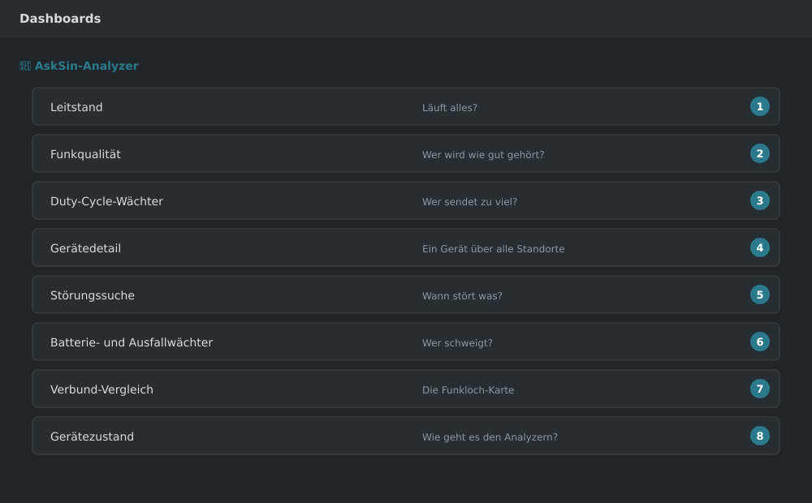
Warum dort schon etwas steht: Normalerweise beginnt man in Grafana mit einer leeren Seite und baut jede Kurve selbst. Genau daran scheitern die meisten. Deshalb bringt der Analyzer die elf Ansichten fertig mit, samt Verbindung zur Datenbank.
Diese elf Ansichten werden bei jedem Grafana-Start neu eingelesen. Ändert man eine im Browser und speichert, ist die Änderung beim nächsten Neustart wieder weg — sonst liessen sie sich nicht mit dem Projekt aktualisieren. Für Eigenes legt man ein neues Dashboard ausserhalb dieses Ordners an; das bleibt unangetastet.
Jede Ansicht beantwortet eine bestimmte Frage. Wer weiß, welche Frage er hat, findet damit sofort die richtige Seite. Die Zahlen in den Bildern verweisen auf die Erklärungen darunter.
Die Abbildungen sind schematisch gezeichnet: Sie zeigen die Anordnung und typische Werte, nicht einen echten Bildschirmabzug. So bleiben sie lesbar, auch wenn Grafana sein Aussehen ändert — und es landen keine Gerätenamen aus einem fremden Haus im Handbuch.
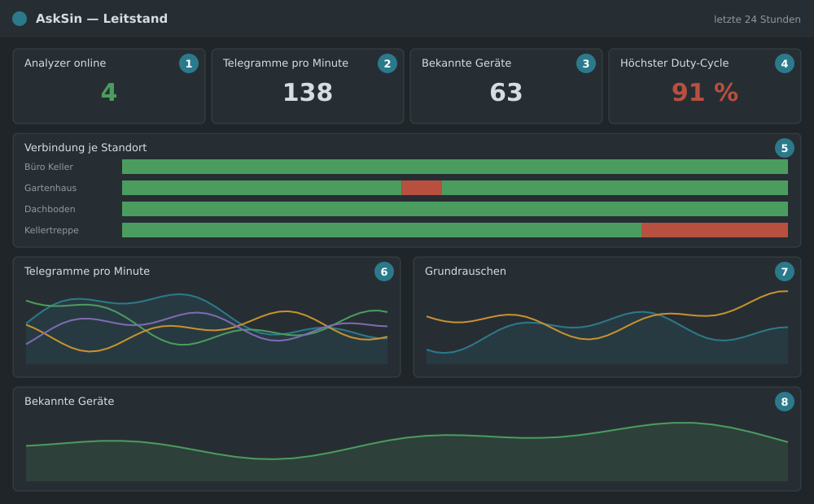
| Nr. | Was dort steht |
|---|---|
| 1 | Wie viele Analyzer gerade eine gültige Verbindung zu ihrem Funkmodul melden. Steht hier eine kleinere Zahl als erwartet, fehlt einer. |
| 2 | Alle Telegramme pro Minute zusammengezählt. Bricht der Wert ein, ohne dass ein Analyzer ausgefallen ist, stimmt etwas mit dem Empfang nicht. |
| 3 | Wie viele verschiedene Funkgeräte bekannt sind. Nicht die Summe über die Standorte — dieselben Geräte werden ja mehrfach gehört. |
| 4 | Das lauteste Gerät im Funknetz. Ab 80 % wird es eng, bei 100 % darf es per Gesetz nicht mehr senden. |
| 5 | Das wichtigste Feld. Ein grüner Balken je Standort über die Zeit. Jede rote Lücke ist ein Ausfall — hier sieht man auf einen Blick, wann und wie lange. |
| 6 | Telegramme pro Minute, eine Linie je Standort. |
| 7 | Das Grundrauschen. Je höher (also weniger negativ), desto mehr Störung liegt auf dem Band. |
| 8 | Die Zahl der bekannten Geräte über die Zeit. Fällt sie, ist etwas verstummt. |
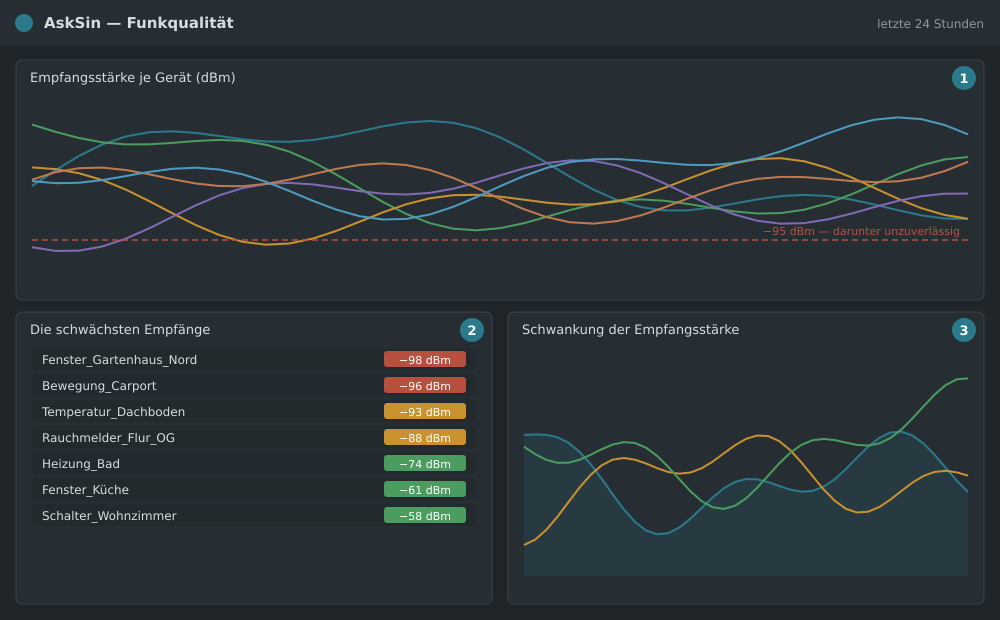
Feld 1 ist neu und der eigentliche Kniff. Bis August 2026 zeichnete diese Ansicht alle Geräte übereinander — bei drei Standorten und rund 65 Geräten je Standort sind das zweihundert Linien. Das ist kein Diagramm mehr, sondern eine Fläche, und es hat den Master zweimal lahmgelegt (Kapitel 19.9).
Jetzt steht oben ein Auswahlfeld, und die Vorgabe sind die schwächsten Geräte — voreingestellt zwanzig, umstellbar auf zehn oder fünfzig. Wer ein bestimmtes Gerät sucht, wählt es dort aus oder benutzt die Ansicht Gerätedetail. Wer den Überblick über das ganze Haus will, nimmt Funkqualität je Standort.
Der Empfangspegel heißt RSSI und wird in dBm angegeben — als negative Zahl. Das verwirrt anfangs: −58 ist besser als −93. Merkhilfe: Je näher an null, desto lauter kommt das Gerät an.
| Bereich | Bedeutung |
|---|---|
| −30 bis −70 dBm | kräftig, völlig unproblematisch |
| −70 bis −90 dBm | brauchbar, im Alltag unauffällig |
| unter −95 dBm | grenzwertig — einzelne Telegramme gehen verloren |
Feld 2 zeigt die ausgewählten Geräte übereinander mit der Linie bei −95 dBm. Feld 3 listet die schwächsten zuerst, farbig hinterlegt — das ist die Arbeitsliste. Feld 4 zeigt, wie stark der Pegel schwankt; große Werte deuten auf Reflexionen oder ein Gerät hin, das bewegt wird.
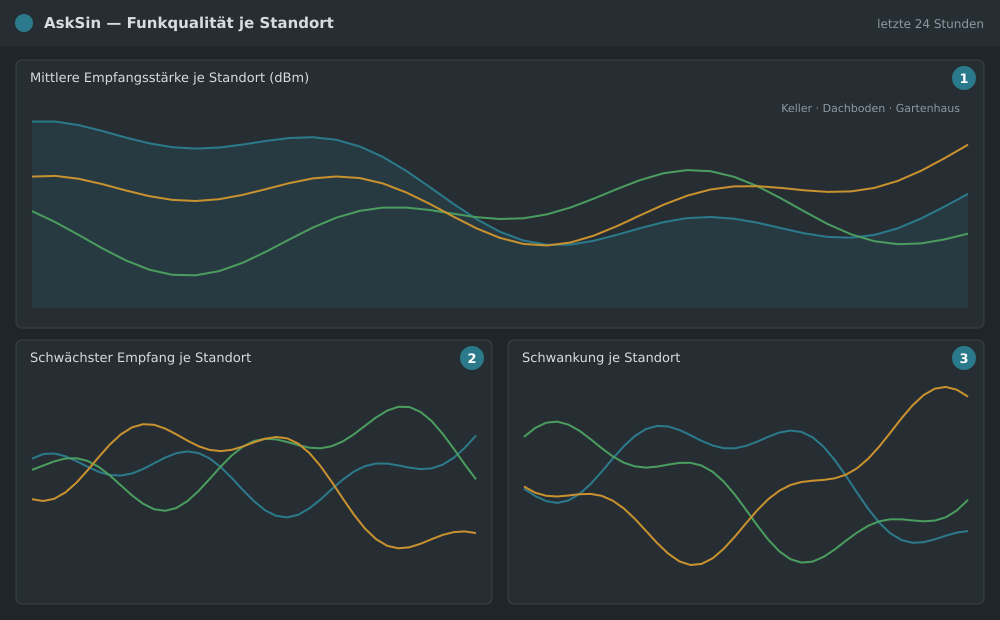
Diese Ansicht beantwortet die Frage, die man zuerst stellt — nicht „wie geht es Gerät 47", sondern „wo im Haus ist der Empfang gut und wo nicht". Je Standort eine Linie, gebildet über alle Geräte, die dieser Standort hört.
| Feld | zeigt |
|---|---|
| 1 Mittlere Empfangsstärke | der Durchschnitt über alle Geräte des Standorts. Bewegt sich die Linie, hat sich am Standort etwas geändert — nicht an einem einzelnen Gerät. |
| 2 Schwächster Empfang | das jeweils schlechteste Gerät im Zeitfenster. Diese Linie reagiert früher als der Mittelwert: Ein Gerät rutscht ab, lange bevor sich der Durchschnitt bewegt. |
| 3 Schwankung | wie unterschiedlich gut die Geräte eines Standorts gehört werden. Hohe Werte heißen meist: Entfernung oder eine Wand. |
Warum getrennt und nicht in einem Bild: Ein Diagramm beantwortet genau eine Frage gut. „Welches Gerät?" und „welcher Ort?" sind verschiedene Fragen, und der Versuch, beide zugleich zu beantworten, hat weder das eine noch das andere geliefert — nur zweihundert Linien.
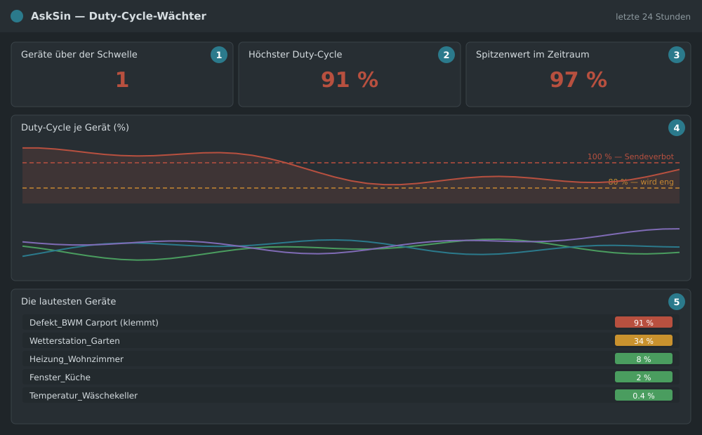
Was ist der Duty-Cycle? Im 868-MHz-Band darf jedes Gerät nur 1 % einer Stunde senden — das sind 36 Sekunden. Das ist keine Empfehlung, sondern Gesetz, und die Geräte halten sich selbst daran: Bei 100 % stellen sie das Senden ein, bis die Stunde vorbei ist. Ein defektes Gerät, das ununterbrochen sendet, verbraucht damit nicht nur sein eigenes Kontingent, sondern belegt das Band für alle anderen mit.
Die Anzeige rechnet in Prozent dieses Kontingents. Die Felder 1 bis 3 nennen die aktuelle Lage und den Spitzenwert im Zeitraum, Feld 4 zeigt den Verlauf mit den Linien bei 80 % und 100 %, Feld 5 listet die lautesten Geräte mit Balken.
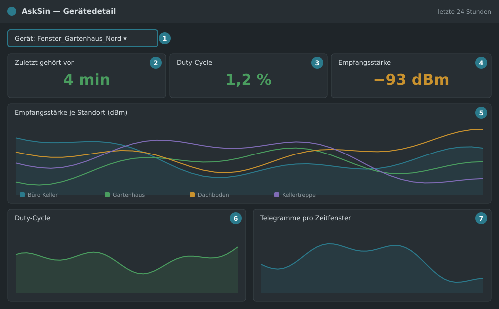
Feld 1 ist ein Auswahlfeld: oben ein Gerät wählen, und die ganze Seite zeigt dessen Werte. Die Felder 2 bis 4 sind der aktuelle Stand. Feld 5 ist der eigentliche Grund für diese Seite — eine Linie je Standort. Damit sieht man sofort, welcher Analyzer das Gerät am besten hört, und ob sich das über den Tag ändert.
Feld 7 verdient eine Erklärung: Der Analyzer zählt Telegramme fortlaufend, und dieser Zähler beginnt bei jedem Dienststart wieder bei null. Die Ansicht rechnet deshalb die Zunahme je Zeitfenster aus. Ein Neustart erzeugt dadurch keine Delle nach unten, sondern wird schlicht übersprungen.
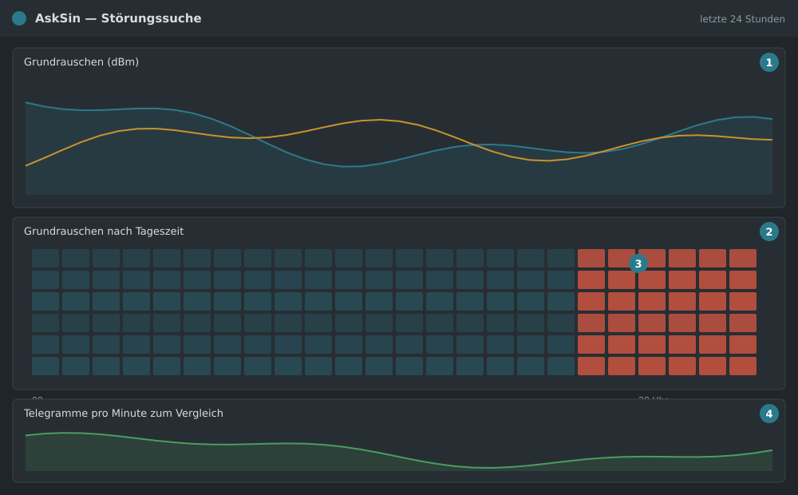
Das Grundrauschen ist der Pegel, der auch dann anliegt, wenn gerade niemand sendet — sozusagen die Lautstärke des leeren Raums. Steigt er, müssen die Funkgeräte gegen mehr Lärm ankommen, und schwache Telegramme gehen unter.
Feld 2 ist ein Wärmebild: waagerecht die Stunde des Tages, senkrecht die Tage untereinander, die Farbe ist die Stärke. Ein senkrechtes Muster wie bei Feld 3 verrät sofort einen Störer, der jeden Abend zur selben Zeit läuft — ein Ladegerät, ein billiges Steckernetzteil, eine LED-Beleuchtung mit Schaltnetzteil. Solche Quellen findet man sonst nur durch Zufall.
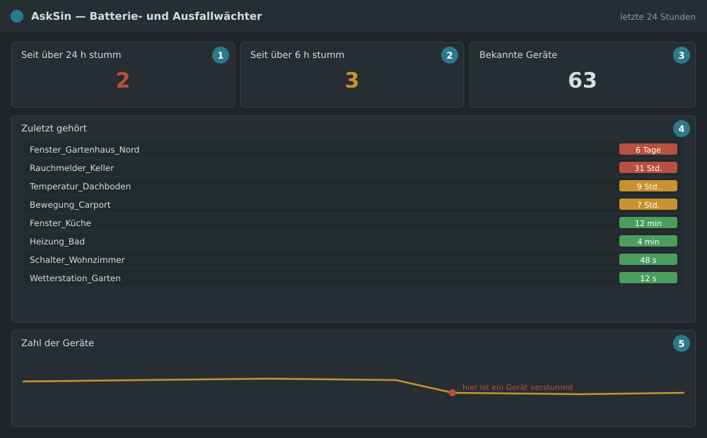
Ein Homematic-Gerät meldet sich regelmäßig, auch wenn sich nichts tut. Hört es damit auf, ist fast immer die Batterie leer. Diese Seite sortiert alle Geräte danach, wie lange sie schon schweigen — das am längsten stumme oben.
Die Farben bedeuten: grün bis 6 Stunden, gelb bis 24 Stunden, rot darüber. Der gelbe Bereich ist noch kein Grund zur Sorge — manche Sensoren melden sich von sich aus nur alle paar Stunden.
Wichtig für den Verbund: Gezählt wird der kürzeste Abstand über alle Standorte. Hat auch nur ein einziger Analyzer das Gerät gerade gehört, lebt es. Andernfalls würde jedes Gerät als tot gemeldet, sobald ein weit entfernter Standort es nicht mehr empfängt.
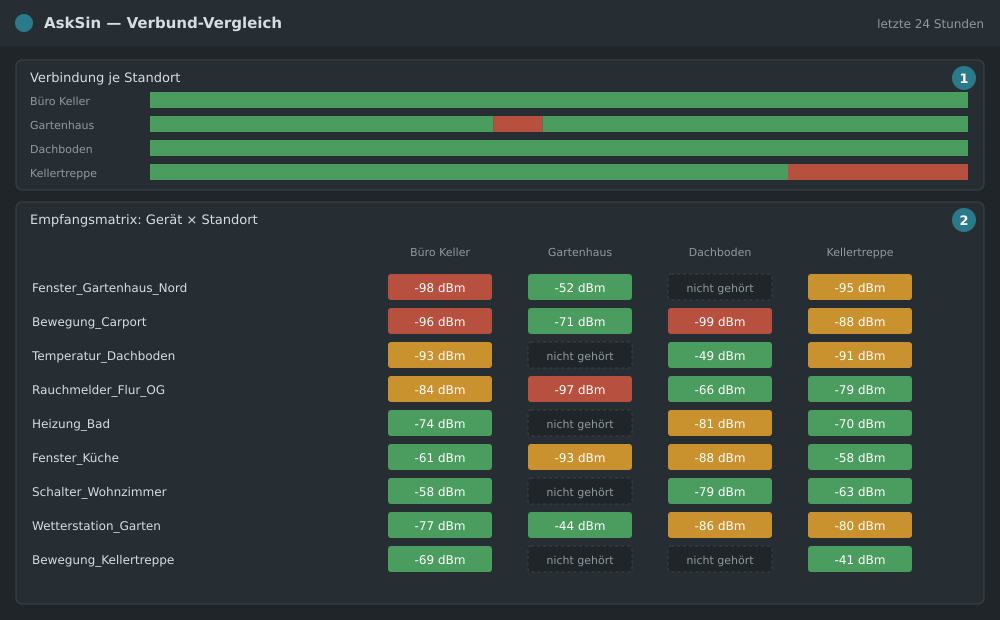
Diese Tabelle ist die wertvollste Auswertung, die ein Verbund hergibt. In jeder Zelle steht, wie gut dieser Standort dieses Gerät hört. Eine gestrichelte Zelle heißt: gar nicht.
Daraus liest man drei Dinge ab. Welche Geräte nur von einem einzigen Analyzer gehört werden — fällt der aus, ist das Gerät blind. Wo eine ganze Zeile schwach ist — dann liegt es am Gerät, nicht am Empfang. Und wo eine ganze Spalte schwach ist — dann steht dieser Analyzer ungünstig oder hat ein Antennenproblem.
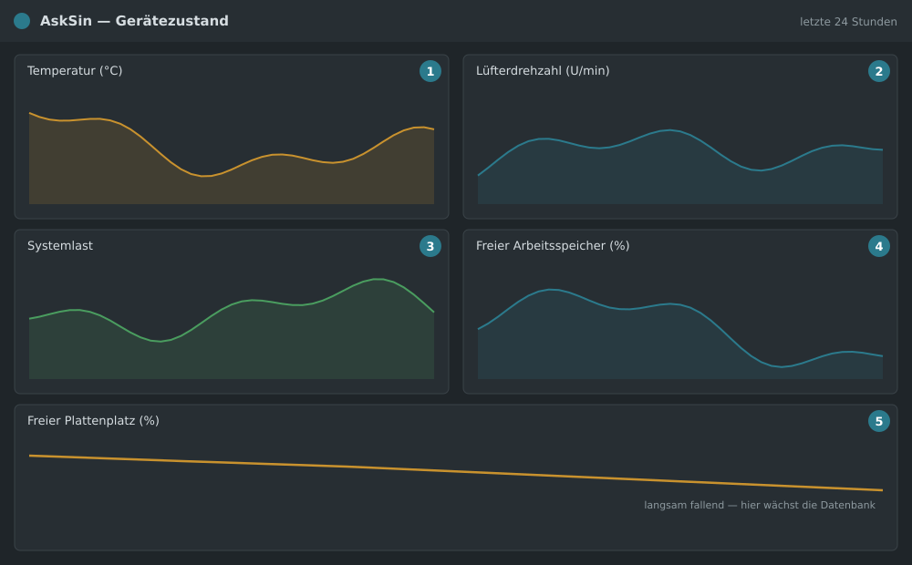
Diese Ansicht ist aus Erfahrung entstanden. Bei der Suche nach einem sporadischen Ausfall im Sommer 2026 gab es Stichproben, aber keine Kurve — und genau das hat die Suche in die Länge gezogen. Wer sehen kann, dass die Temperatur seit Tagen steigt oder der freie Plattenplatz stetig fällt, sucht gar nicht erst an der falschen Stelle.
Ab etwa 80 °C drosselt der Raspberry Pi seine Rechenleistung. Fällt die Lüfterdrehzahl (Feld 2) auf null, während die Temperatur (Feld 1) steigt, ist der Lüfter defekt. Feld 5 ist der Wert, den man mit lokaler Datenbank im Auge behalten sollte — er fällt zwangsläufig, nur eben sehr langsam.
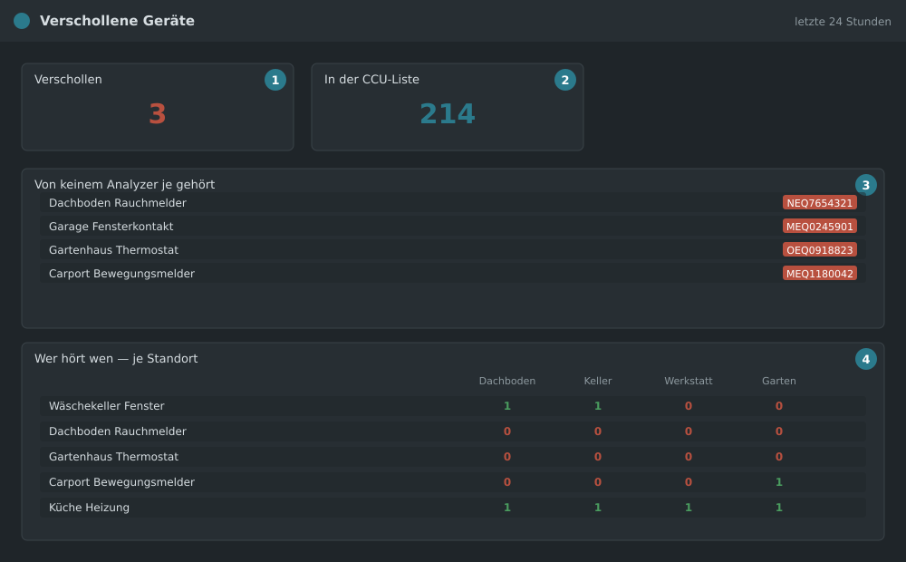
| Nr. | Was dort steht |
|---|---|
| 1 | Wie viele Geräte in der CCU stehen, die kein einziger Analyzer je gehört hat. Jedes davon ist ein Fund. |
| 2 | Die Bezugsgröße: reale Funkgeräte in der Liste. Gruppen, die Zentrale selbst und die Pseudoadressen des CCU-Skripts zählen nicht mit — eine Gruppe hat keinen Sender. |
| 3 | Die Arbeitsliste mit Name, Adresse und Seriennummer. Reihenfolge zum Abarbeiten: existiert das Gerät überhaupt noch, dann Batterie, dann Standort des nächsten Analyzers. |
| 4 | Die Matrix: 1 heißt „dieser Standort hat es schon gehört“, 0 heißt „nie“. |
Die Matrix ist der nützlichste Teil dieser Ansicht, und zwar nicht wegen der Nullzeilen. Eine Zeile mit lauter Nullen ist ein verschollenes Gerät — das steht schon in der Liste darüber. Interessanter ist eine Zeile mit genau einer Eins: Dieses Gerät hängt an einem einzigen Analyzer. Fällt der aus oder wird umgestellt, ist auch dieses Gerät blind, und niemand merkt es. Das ist die Information, nach der man beim Planen von Standorten eigentlich sucht.
Ein „nie gehört“ ist kein Beweis für einen Defekt. Grundlage ist alles seit Beginn der Aufzeichnung, und die Datenbank hält 365 Tage vor — streng genommen heißt die Zahl also „nicht im aufbewahrten Zeitraum“. Ein Gerät, das erst gestern angelernt wurde, taucht hier ebenso auf wie eines, das vor zwei Jahren ausgebaut und nie aus der Zentrale genommen wurde. Die Liste ist ein Ausgangspunkt zum Nachsehen, kein Urteil.
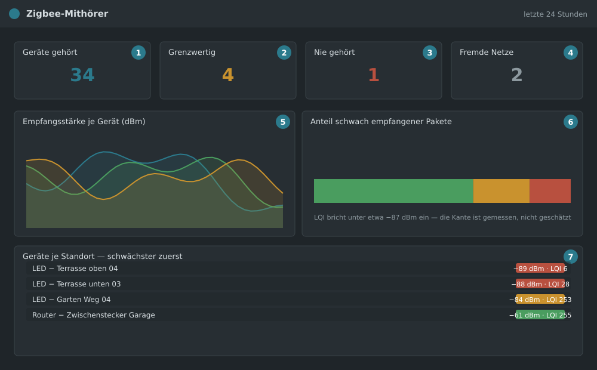
| Nr. | Was dort steht |
|---|---|
| 1 | Geräte des eigenen Netzes, die im Zeitraum gehört wurden. |
| 2 | Davon grenzwertig: Verbindungsgüte (LQI) unter 50. Diese Geräte funktionieren heute noch, aber ohne Reserve. |
| 3 | Geräte aus der Zigbee-Steuerung, die kein Standort gehört hat. |
| 4 | Fremde Netze auf demselben Kanal — nicht Deine Geräte, aber sie belegen den Empfang mit. |
| 5 | Empfangsstärke je Gerät über die Zeit. Die Farbschwelle liegt bei −80 und −88 dBm. |
| 6 | Anteil schwach empfangener Pakete. Steigt er, ohne dass die Empfangsstärke fällt, kommt eine Störquelle dazu. |
| 7 | Alle Geräte je Standort, schwächster zuerst — die Arbeitsliste. |
Warum diese Ansicht überhaupt nötig ist. Die Zigbee-Zentrale sagt Dir, ob ein Gerät erreichbar ist. Sie kann Dir nicht sagen, mit wie viel Reserve — dafür müsste sie mithören, und genau das kann ein Koordinator nicht, während er sein Netz verwaltet. Ein Gerät bei −88 dBm und eines bei −52 dBm sind für sie beide „erreichbar“. Das eine fällt beim nächsten feuchten Sommer aus, das andere nicht.
Ein „nie gehört“ bedeutet mit einem einzigen Standort noch nichts. Es kann heißen, dass das Gerät still ist — oder dass es außerhalb der Reichweite dieses einen Analyzers liegt. Diese beiden Fälle trennt erst ein zweiter Mithörer an einem anderen Ort; die Empfangsmatrix im Verbund-Tab zeigt es dann Zeile für Zeile.
Vier Alarme sind fertig eingerichtet. Sie melden sich, ohne dass jemand ein Dashboard offen hat — und genau das ist der eigentliche Gewinn der ganzen Übung. Kurven anschauen kann man nur, wenn man daran denkt; eine Nachricht kommt von selbst.
| Alarm | Löst aus, wenn … | Was dann zu tun ist |
|---|---|---|
| Analyzer offline | … ein Standort zehn Minuten lang keine gültige Verbindung meldet oder gar keine Daten mehr schickt | Steckt die Platine? Läuft der Dienst? Kapitel 23 hilft weiter. |
| Duty-Cycle über 80 % | … ein Gerät eine Viertelstunde lang über der Schwelle liegt | Batterie prüfen oder das Gerät vom Netz nehmen — es blockiert sonst das Band für alle. |
| Gerät verstummt | … von einem Gerät über 24 Stunden nichts kam, an keinem Standort | Fast immer leere Batterie. |
| Grundrauschen erhöht | … ein Standort eine halbe Stunde über −80 dBm liegt | Störquelle suchen (Abschnitt 19.7, Störungssuche). |
Damit die Meldungen ankommen, braucht es ein Ziel. Das wird in der Weboberfläche des Analyzers eingetragen — unter Einstellungen → Alarme: wohin melden? —, nicht in Grafana. Drei Wege stehen zur Wahl.
Wer ohnehin ioBroker betreibt, hat dort meist schon Telegram, Signal, Pushover oder E-Mail eingerichtet. Dann ist es unsinnig, dasselbe ein zweites Mal in Grafana zu tun. Der Analyzer schickt die Meldung an den Adapter, und der verteilt sie über das, was im Haus vorhanden ist.
Einzutragen ist nur die Adresse des Adapters, etwa
http://192.168.1.20:8087/asksin/alarm.
Versionsabhängigkeit. Analyzer und Adapter werden getrennt gepflegt, also passen sie irgendwann nicht mehr zusammen — und der Fehler äussert sich dann als „geht nicht", nicht als „Version zu alt". Deshalb weist seit dieser Ausgabe jede Seite aus, welche Fassung der anderen sie braucht, und prüft es auch:
| Analyzer | ioBroker-Adapter | wodurch |
|---|---|---|
| 0.12.0 | 0.0.2 | erste Fassung mit Alarm-Zustellung |
Die Einstellungsseite nennt die geforderte Adapterfassung, und der Testknopf fragt den Adapter vorher danach: Meldet er eine ältere, steht die Warnung im Ergebnis — auch dann, wenn er die Probemeldung angenommen hat. Ein zu alter Adapter nimmt sie womöglich an, ohne sie zu verarbeiten, und ein Erfolg, den es nicht gibt, wäre die schlechteste Auskunft.
Umgekehrt prüft der Adapter bei jeder Abfrage die Version des Analyzers und warnt einmalig im ioBroker-Protokoll, wenn sie zu alt ist.
Damit das funktioniert, muss im Adapter der Empfang
eingeschaltet sein: Instanz-Einstellungen → Alarme vom Analyzer. Dort
stehen Port (Vorgabe 8095) und Pfad (Vorgabe /asksin/alarm), aus
denen sich die Adresse zusammensetzt, und dort wird auch eingetragen, an
welchen Messaging-Adapter weitergereicht werden soll — telegram.0,
signal-cmb.0, pushover.0 oder email.0.
Und das Verbindungspasswort? Es kommt von nirgendwo her und muss auch nirgends beantragt werden. Man denkt es sich aus — wie einen WLAN-Schlüssel — und trägt dasselbe auf beiden Seiten ein: im Adapter unter Alarme vom Analyzer (dort erzeugt ein Knopf auch eines) und hier im Analyzer daneben. Sein Zweck: Der Adapter horcht auf einem Anschluss im Heimnetz; ohne Passwort könnte jedes Gerät dort Alarme einwerfen und das Telefon klingeln lassen. Wer das nicht braucht, lässt beide Felder leer — dann wird nicht geprüft.
Der Analyzer schickt es als Kopfzeile mit, nicht als Anhängsel an der Adresse. Das ist kein Detail: Adressen landen in Protokollen, bei Grafana wie beim Empfänger — Kopfzeilen nicht.
Ob der Weg steht, lässt sich vorab prüfen: die Adresse im Browser öffnen. Der Adapter antwortet auf einen gewöhnlichen Aufruf mit einem Hinweistext. Kommt der, ist alles bereit — und man muss nicht erst in Grafana suchen, wenn später nichts ankommt. Im Adapter selbst gibt es dazu den Knopf Testalarm senden, der eine Probemeldung durch den ganzen Weg schickt.
Der Adapter legt dabei States unter alarm.* an:
ob gerade ein Alarm offen ist, wie viele, die fertige Nachricht sowie Name,
Standort und Bereich des jüngsten. Wer feiner unterscheiden möchte als
„Alarm ja/nein", findet in alarm.rohdaten alle Alarme als JSON.
Der Analyzer verschickt über den Postausgangsserver des E-Mail-Anbieters. Nötig sind fünf Angaben, die alle in den Einrichtungshinweisen des Anbieters stehen:
| Feld | Beispiel | Woher |
|---|---|---|
| SMTP-Server | smtp.ionos.de | Aus den Angaben des Anbieters, meist unter „Postausgangsserver“. |
| Port | 587 | 587 ist der übliche Wert. Er verwendet StartTLS, also verschlüsselte Übertragung. |
| Benutzer | analyzer@beispiel.de | Bei fast allen Anbietern die vollständige E-Mail-Adresse. |
| Absender | analyzer@beispiel.de | Dasselbe wie der Benutzer. Siehe Stolperstein 1. |
| Passwort | — | Das E-Mail-Passwort, nicht das Kundenkennwort. Siehe Stolperstein 2. |
Stolperstein 1 — Absender ungleich Benutzer. Fast alle Anbieter erlauben nur die Adresse zum Versand, mit der man sich angemeldet hat. Steht dort etwas anderes, weist der Server ab:
550-Requested action not taken: mailbox unavailable 550-Sender address is not allowed.
Stolperstein 2 — falsches Passwort. Viele Anbieter vergeben für den Mailzugang ein eigenes Passwort, getrennt vom Kundenkonto. Bei IONOS und T-Online wird es im Kundencenter festgelegt, bei Google heißt es App-Passwort. Mit dem Kundenkennwort antwortet der Server:
535 5.7.8 Authentication credentials invalid
Der Testknopf. Unter den Feldern steht „Testmail senden“. Er verschickt sofort eine Nachricht — ohne Umweg über Grafana und ohne vorher zu speichern. Klappt es, steht dort eine grüne Bestätigung. Klappt es nicht, steht dort zuerst im Klartext, was zu tun ist, und darunter die wörtliche Antwort des Servers als Beleg.
Telegram braucht zwei Angaben, die man sich einmalig besorgt:
/newbot schicken. Nach zwei Rückfragen (Name und Benutzername)
antwortet er mit einem Token der Form
123456789:AAEh…. Diese Zeichenkette wird gebraucht —
nicht der Name des Bots.https://api.telegram.org/bot<TOKEN>/getUpdates aufrufen
und in der Antwort nach "chat":{"id":…} suchen. Bei Gruppen
steht dort eine Zahl mit Minuszeichen davor — das gehört dazu.Beides eintragen, speichern, fertig. Der häufigste Fehler ist, in das Token-Feld den Bot-Namen zu schreiben; die Oberfläche fängt das ab und sagt es.
Ein Klick auf Speichern und übernehmen trägt in Grafana zwei Dinge ein: den Kontaktpunkt und die Benachrichtigungsrichtlinie. Das klingt nach einer Kleinigkeit, ist aber der häufigste Grund, warum Alarme bei einer Einrichtung von Hand nie ankommen: Der Kontaktpunkt steht da, Grafana markiert ihn als „Unused“, und die Standardrichtlinie zeigt weiterhin ins Leere.
Damit niemand danach sucht:
| Geht nicht | Warum |
|---|---|
| Langzeitdaten auf mehreren Analyzern gleichzeitig | Ein Verbund braucht eine Datenhaltung. Der Master sammelt, die Clients liefern. |
| Auf einem Pi 3 oder mit unter 2 GB Speicher | Siehe 19.4. Das ist eine harte Sperre, keine Empfehlung. |
| Ohne Internet einrichten | Die Pakete müssen einmal geladen werden. Danach läuft alles offline. |
| Die mitgelieferten Ansichten dauerhaft im Browser ändern | Sie werden bei jedem Start neu eingelesen. Eigene Dashboards ausserhalb des Ordners bleiben erhalten. |
| Alte Daten aus der lokalen Datenbank übernehmen | Die Aufzeichnung beginnt mit der Einrichtung. Was vorher war, bleibt in der SQLite-Datenbank des Analyzers. |
| Grafana von aussen erreichbar machen | Weder vorgesehen noch empfohlen. Grafana hört im Heimnetz; für Zugriff von unterwegs gibt es VPN. |
Und ein Hinweis, der leicht übersehen wird: Die lokale Datenbank des Analyzers bleibt die primäre Aufzeichnung. Fällt InfluxDB aus, merkt sich der Analyzer das als Fehlerzähler und arbeitet unbeirrt weiter. Es geht nichts verloren, was die Weboberfläche zeigt — nur die Langzeitreihe bekommt eine Lücke.
| Grösse | Wert |
|---|---|
| Je Analyzer und Tag | etwa 5–10 MB |
| Fünf Analyzer, ein Jahr | etwa 10–15 GB |
| Aufbewahrung | zwei Jahre, danach wird das Älteste verworfen |
| Arbeitsspeicher im Betrieb | InfluxDB 400–500 MB, Grafana 150–250 MB |
Auf einer 240-GB-SSD als Bootmedium ist das unproblematisch. Wer es genau wissen will, findet den freien Platz in der Ansicht Gerätezustand, Feld 5 — dort sieht man auch, wie schnell er tatsächlich fällt.
| Beobachtung | Ursache | Abhilfe |
|---|---|---|
| Der Kasten „Langzeitdaten vor Ort“ fehlt ganz | Analyzer ist als Client eingetragen, oder der Core ist älter als diese Fassung | Rolle prüfen; sudo asksin-analyzer update |
| Die Auswahl der Rolle ist grau | Hardware zu schwach | Der Grund steht direkt darunter. Siehe 19.4 — ein anderes Gerät muss Master werden. |
| „wird übernommen …“ steht ewig da | Der Helfer, der es nach Grafana überträgt, fehlt auf dem Gerät | Nach zehn Minuten sagt die Oberfläche das selbst. sudo asksin-analyzer update holt ihn nach. |
Grafana meldet DatasourceError | Die Abfrage selbst ist gescheitert — meist, weil Grafana gerade neu gestartet wurde | Einmalig ist das harmlos; die drei Schwellenregeln behalten dabei ihren Zustand. Bleibt es dabei: sudo bash tools/alarme-pruefen.sh stellt dieselben vier Fragen direkt an die Datenbank und gibt die Antwort im Wortlaut zurück, samt Liste aller vorhandenen Felder. |
| Grafana zeigt „No data“ in allen Ansichten | Der Analyzer schreibt noch nicht in die lokale Datenbank | Im Kasten Langzeitdaten (InfluxDB) muss http://127.0.0.1:8086 stehen und „aktiv“ gesetzt sein. |
| Einzelne Ansichten sind leer, andere nicht | Für diesen Zeitraum liegen noch keine Daten vor | Oben rechts den Zeitraum verkleinern — direkt nach der Einrichtung hilft „letzte 15 Minuten“. |
| Die Testmail scheitert | siehe die beiden Stolpersteine in 19.8 | Die Meldung unter dem Knopf nennt Ursache und Abhilfe im Klartext. |
| Alarme lösen aus, aber nichts kommt an | Kein Ziel eingetragen, oder nur der Kontaktpunkt ohne Richtlinie | Einstellungen → Alarme: wohin melden? ausfüllen und speichern — das setzt beides. |
| Grafana fragt nach Anmeldung, Passwort vergessen | — | Auf dem Gerät: sudo grafana-cli admin reset-admin-password NEUESPASSWORT |
Für tiefere Fälle stehen die Zugangsdaten der Datenbank auf dem Gerät unter
/etc/asksin-analyzer/influx-zugang.txt — lesbar nur für root. Dort
finden sich Organisation, Bucket und Token, falls man einmal mit einem anderen
Werkzeug hineinsehen möchte.
Der Adapter ioBroker.asksinanalyzer-rpi (eigenes Repository, MIT-Lizenz) bringt die Analyzer-Werte als States in deine Hausautomation — für Visualisierung, Benachrichtigungen und Automatik-Regeln. Er enthält bewusst keinerlei Analyse-Logik: Er fragt nur die API des Analyzers ab und spiegelt die Werte.
Voraussetzungen — Stand 03.08.2026:
| Bestandteil | nötig | aktuell |
|---|---|---|
| ioBroker-Admin | ab 8.0.0 | 8.0.1 |
| js-controller | ab 6.0.11 | |
| Node.js | ab 22 | Admin 8 verlangt das ohnehin |
| AskSin-Analyzer | ab 0.12.0 | siehe Abschnitt 19.9 |
Ältere Admin-Fassungen werden nicht unterstützt. Wer noch auf Admin 7 steht, aktualisiert zuerst den Admin — er bringt Node 22 als Anforderung ohnehin mit.
Admin 8.0.1 hat seine Oberfläche auf React 19 umgestellt. Für diesen Adapter ändert das nichts: Er benutzt jsonConfig, also eine reine Beschreibung, die Admin selbst zeichnet. Betroffen wären nur Adapter mit einer eigenen React-Oberfläche.
https://github.com/ssbingo/ioBroker.asksinanalyzer-rpi
(alternativ an der Konsole: iobroker url …).http://<pi>:8080), ggf. das
Auth-Token des Analyzers, Abfrageintervall (Vorgabe 5 s).| Zweig | Inhalt |
|---|---|
info.* | connection (erreichbar und Sniffer verbunden), Standort, Version, Demo, Update verfügbar |
funk.* | Telegramme/min, Grundrauschen (roh + geglättet), aktive Geräte, höchster Duty-Cycle samt Gerätename |
zaehler.* | Telegramme, Neuverbindungen, verlorene Zeilen, Persistenz-Fehler seit Dienststart |
geraete.<ADRESSE>.* | je Funkgerät: Name, RSSI (letzter/geglättet), Duty-Cycle, Telegramme, zuletzt gehört — Channels entstehen automatisch |
verbund.<STANDORT>.* | nur bei der Instanz des Verbund-Masters: je Standort erreichbar, Sniffer-Status, Kennzahlen, Version, Update-Flag und zeitdriftWarnung — ein fertiger Auslöser für „NTP prüfen an Standort X"-Benachrichtigungen |
funk.maxDutyCycle > 80 („Gerät X sendet
sich das Kontingent leer"), bei info.connection = false länger als
5 Minuten („Analyzer Keller meldet sich nicht") oder bei
verbund.*.zeitdriftWarnung = true.Lesen ist frei, Ändern braucht das Token. Alle Anzeige-Endpunkte (Übersicht, Listen, Verbund) sind im LAN offen — das ist gewollt, ein Funkanalyzer zeigt keine Geheimnisse. Alles, was etwas verändert (Einstellungen, Updates, Firmware-Flash, Netzwerk, Datenbank leeren), verlangt das beim Setup erzeugte Token. Du trägst es einmal je Browser unter Einstellungen → Zugriff ein; es bleibt nur in diesem Browser gespeichert.
asksin-analyzer tokenManche Störungen zeigen sich erst nach Stunden — der Analyzer ist plötzlich nicht mehr erreichbar, und hinterher weiß niemand, warum. Genau dafür führt die Software ein Protokoll: eine Textdatei je Tag, in der mitgeschrieben wird, was passiert ist. Zu finden unter Wartung in der Weboberfläche.

| Stufe | Was hineinkommt | Wann sinnvoll |
|---|---|---|
| Fehler | Nur Störungen | Dauerbetrieb, kleinste Datei |
| Info | Störungen und wichtige Ereignisse | Vorgabe |
| Debug | Zusätzlich Abläufe im Inneren | Fehlersuche |
| Alles | Auch einzelne Telegramme | Kurzzeitig, wächst schnell |
Daneben stellst du ein, wie viele Tage aufgehoben werden (1 bis 365). Beim Tageswechsel legt der Dienst eine neue Datei an und löscht, was älter ist als die Frist. Beides wirkt sofort, ohne Neustart.
Neben den Meldungen der Anwendung selbst erhebt der Analyzer jede Minute die Werte, an denen sich ein Ausfall im Nachhinein festmachen lässt — und schreibt sie alle 15 Minuten in eine Zeile:
| Wert | Warum er zählt |
|---|---|
| Unterspannung und Drosselung | Mit PoE-HAT und SSD am USB die häufigste Ursache für Einfrieren und harte Neustarts. Der Pi merkt sich auch, ob es seit dem Einschalten schon einmal vorkam. |
| Temperatur | Ab etwa 80 °C drosselt der Pi, ab 85 °C hart. |
| Arbeitsspeicher | Wird er knapp, räumt das System Programme ab — ohne dass diese eine Fehlermeldung hinterlassen. |
| Freier Plattenplatz | Eine volle Systempartition legt Dienste still. |
| Systemlast und Laufzeit | Springt die Laufzeit auf wenige Sekunden, hat das Gerät neu gestartet. |
Das eigene Protokoll zeigt nur, was der Analyzer selbst mitbekommt. Ob eine
Störung aus dem System kam, steht im Journal des Betriebssystems — in
Zeilen, die unser Programm nie zu sehen bekommt. Der Dienst liest sie deshalb
mit und übernimmt sie unter [systemlog]: Unterspannungsmeldungen
des Kernels, abgeräumte Programme bei Speichermangel, neu angemeldete
USB-Geräte (die Boot-SSD!), Dateisystemfehler, Temperaturnotabschaltungen,
Kernel-Abstürze.
Nach jedem Start bewertet der Dienst außerdem, wie der vorherige Lauf endete. Fand sich dort keine Abmeldung, steht ganz oben in der neuen Tagesdatei:
FEHLER [systemlog] Der vorherige Systemlauf wurde NICHT sauber beendet —
Hinweis auf Stromausfall, Spannungseinbruch oder
Kernel-Absturz, nicht auf einen Fehler dieser Anwendung
Damit das funktioniert, richtet der Installer zweierlei ein: Der Dienst darf das Journal lesen, und das Journal wird dauerhaft gespeichert. Ab Werk legt Raspberry Pi OS es nur flüchtig im Arbeitsspeicher ab — nach einem harten Absturz wäre genau der interessante Teil verloren.
FEHLER und nach [system] suchen.
Steht dort Unterspannung, ist die Stromversorgung die Ursache — dann
hilft kein Software-Update, sondern ein kräftigeres Netzteil beziehungsweise
ein PoE-Injektor mit mehr Reserve.Die Datei ist bewusst in festen Spalten geschrieben, damit sie sich sowohl lesen als auch durchsuchen lässt:
2026-07-31 08:12:33.123 FEHLER [ingest] Port weg (EIO) 2026-07-31 08:12:34.001 INFO [system] Temperatur 62,3 °C · Speicher frei 940 MB
| Symptom | Wahrscheinliche Ursache | So prüfst/behebst du es |
|---|---|---|
Keine Ausgabe an /dev/ttyAMA0 | UART nicht eingerichtet oder Konsole aktiv | sudo hardware/setup-uart.sh --check ausführen; nach Änderungen neu starten. Existiert /dev/ttyAMA0 überhaupt? (ls -l /dev/ttyAMA*) |
Nur wirre Zeichen statt :…;-Zeilen | Baudrate 57600 statt 58824 | Erst stty -F /dev/ttyAMA0 57600 raw -echo, dann sudo python3 /opt/asksin-analyzer/deploy/baudrate.py /dev/ttyAMA0 58824 — stty allein kann die krumme Rate nicht, Kapitel 2 erklärt, warum |
| Rauschzeilen kommen, aber nie Telegramme | Antenne fehlt/lose, oder kein BidCoS-Verkehr | IPEX-Stecker eingerastet? Ein Homematic-Gerät bewusst auslösen (Fensterkontakt). Prüfen, ob Geräte klassisches Homematic (nicht nur HmIP) sind |
| Gar keine Rauschzeilen (auch nach 2 s nichts) | Firmware fehlt oder Chip startet nicht | Blitzt D1 beim Einschalten kurz? Kapitel 7/8 wiederholen; an TP2 3,3 V gegen TP4 messen |
avrdude: target doesn't answer | Programmiertakt zu hoch / Verkabelung | -B 8 ergänzen; MISO↔MOSI prüfen (Kapitel 7.6) |
Bootloader-Update schlägt fehl (not in sync) | Reset-Impuls kam zu früh/spät oder Dienst belegt Port | Reihenfolge aus Kapitel 11 exakt einhalten; sudo fuser /dev/ttyAMA0 zeigt Belegungen |
| Empfang schlecht (RSSI ständig unter −95 dBm) | Antenne im Metallschrank oder Störer | Antenne nach außen verlegen; Grundrauschen beobachten: steigt es ohne Telegramme, stört eine Quelle in der Nähe (Netzteile!) |
| Funkmodul wird heiß | Es hat irgendwann 5 V gesehen | Sofort stromlos machen. Modul ist vermutlich defekt — auslöten, neues Modul, künftig Jumper-Regel aus Kapitel 7 beachten |
| Weboberfläche nicht erreichbar | Dienst gestoppt oder nur an 127.0.0.1 gebunden | asksin-analyzer status; in config.json muss "host": "0.0.0.0" stehen (LAN-Frage des Installers) |
| Kopfzeile dauerhaft „Sniffer getrennt" | HAT steckt nicht / UART nicht eingerichtet / Baudrate | Ohne Platine normal. Sonst: asksin-analyzer logs — steht dort ein Gerätefehler, Kapitel 9 (UART-Frage des Installers) wiederholen |
| Geräte heißen nur „1A2B3C" statt Klarnamen | CCU nicht erreichbar oder CCU-Script fehlt | CCU-Adresse in Einstellungen → Standort & Zentrale prüfen; in der Weboberfläche CCU-Verbindung testen anklicken — der Test nennt die Ursache und blendet die Anleitung ein (Kapitel 12.3) |
| „Nicht erlaubt" beim Speichern in der Weboberfläche | Auth-Token fehlt in diesem Browser | Token unter Einstellungen → Zugriff eintragen (Kapitel 21; vergessen? asksin-analyzer token) |
| 🔔-Glocke erscheint nie | Pi ohne Internetzugang zu GitHub | asksin-analyzer logs zeigt „Aktualitätsprüfung fehlgeschlagen"; Update dann von Hand: sudo asksin-analyzer update |
| Verbund-Kachel warnt „Uhr weicht ab" | NTP auf einem Analyzer nicht synchron | Auf dem betroffenen Gerät Einstellungen → Netzwerk: Zeile „NTP aktuell" muss „synchron" zeigen — sonst NTP-Server setzen (Vorgabe de.pool.ntp.org) |
| Flotten-Update meldet „Auth-Token fehlt" | Peer verlangt Token, keines hinterlegt | Peer entfernen und mit seinem Token neu verknüpfen (Einstellungen → Verbund) |
Dienst startet nicht, Journal zeigt listen EACCES … :80 | Port unter 1024 gewählt; der Dienst läuft ohne Rechte dafür | Seit dieser Fassung bringt die Unit AmbientCapabilities=CAP_NET_BIND_SERVICE mit — sudo asksin-analyzer update genügt. Alternativ in /etc/asksin-analyzer/config.json einen Port ab 1024 eintragen (8080) und sudo asksin-analyzer restart |
Permission denied auf /dev/spidev0.0 oder /dev/i2c-1 | Dienstbenutzer nicht in den Gruppen spi/i2c | sudo asksin-analyzer update zieht die Gruppen nach; danach sudo systemctl restart asksin-analyzer |
| Status-LED bleibt dunkel | Schalter SW1 steht auf der anderen Betriebsart, oder SPI bzw. das Onboard-Audio ist nicht passend eingestellt. Vor Fassung 0.15.8 außerdem: falscher SPI-Takt | Kapitel 10.3 (SW1-Kasten): Schalterstellung mit Einstellungen → Status-LED & OLED abgleichen. Auf Pi 3/4 muss zusätzlich das Onboard-Audio aus sein, auf Pi 5 der SPI-Bus an. Die Übersicht zeigt „LED gestört" mit Ursache. Bei älterer Software zuerst Kapitel 18.1 (Kasten zum SPI-Takt) |
| OLED bleibt dunkel | I²C nicht aktiv oder Kabelbelegung | sudo raspi-config → I²C aktivieren; i2cdetect -y 1 muss 3c zeigen; J5-Belegung gegen Kapitel 10.3 prüfen |
| 1-Wire-Sensoren funktionieren nicht mehr | w1-gpio kollidiert mit GPIO4 (Reset) | In config.txt: dtoverlay=w1-gpio,gpiopin=17 o. ä. — nicht GPIO4 |
| Der Pi fällt hart aus und startet neu — im Journal steht nichts | Lässt sich aus dem Gerät heraus nicht klären: Was die Ursache erklären würde, wird nicht mehr geschrieben | Abschnitt 23.1 — Kernel-Meldungen auf einen zweiten Rechner mitschneiden |
Update bricht ab mit object file … is empty | Beschädigte Git-Ablage nach hartem Ausschalten | Abschnitt 23.3 — der Installer repariert das selbst; vorher mit dmesg klären, ob die Karte schuld ist |
Pi reagiert auf nichts mehr, sudo meldet Input/output error | Die USB-SSD hat sich vom Bus abgemeldet und ist als neues Gerät wiedergekommen — das Wurzeldateisystem zeigt ins Leere | Abschnitt 23.2. Zuerst die Steckerkette prüfen: ein durchgehendes Kabel in den blauen USB-3-Anschluss, keine Koppler dazwischen |
Es gibt eine Sorte Ausfall, bei der die üblichen Mittel versagen: Der Pi ist
schlagartig weg und startet neu, und das Journal endet mitten im Satz oder
meldet beim nächsten Start system.journal corrupted or uncleanly shut
down. Der Grund ist einfach — was die Ursache erklären würde, hätte auf
die Platte geschrieben werden müssen, und dazu kam es nicht mehr. Man sucht in
Protokollen nach einem Ereignis, das per Definition kein Protokoll hinterlässt.
Der Ausweg heißt netconsole. Damit schickt der Kernel jede Meldung zusätzlich als Netzwerkpaket an einen zweiten Rechner — ohne Umweg über ein Dateisystem, ohne beteiligten Dienst. Was dort ankommt, ist der Stand unmittelbar vor dem Ausfall.
Auf dem Analyzer, mit der Adresse des Rechners, der mitschreiben soll:
sudo bash /opt/asksin-analyzer/tools/netconsole-einrichten.sh 192.168.1.50
Das Skript sucht sich Schnittstelle, Absenderadresse und Ziel-MAC selbst,
bleibt über Neustarts hinweg aktiv und schickt zum Schluss eine Probezeile. An
der Netzwerkeinrichtung des Geräts ändert es nichts — weder
Adresse noch Name noch Route; es kommt allein ein weiteres Ziel für die
Kernel-Ausgabe hinzu. Rückgängig mit --aus.
Auf dem mitschreibenden Rechner — das kann jeder Linux-Rechner im selben Netz sein, auch die ioBroker-Maschine:
python3 tools/netconsole-empfaenger.py --port 6666 --datei kernel.log
Dazu richtet das Skript einen Pulsschlag ein: eine Zeile pro Minute mit Laufzeit, Systemlast, Temperatur und der Drossel-Meldung des Chips. Ohne ihn bliebe eine Lücke — ein untätiger Kernel sagt nichts, und fällt der Pi nachts um drei aus, wäre die letzte empfangene Zeile womöglich vom Vorabend. Man wüsste weder, wann er starb, noch ob der Mitschnitt überhaupt noch lief. Mit dem Puls wird die Stille aussagekräftig: Der letzte Schlag datiert den Ausfall auf die Minute genau, und die vier Werte darin zeigen, ob vorher etwas aus dem Ruder lief.
Jede Zeile bekommt die Uhrzeit des empfangenden Rechners. Genau dieser Zeitstempel ist die eigentliche Information:
| Was der Mitschnitt zeigt | Was daraus folgt |
|---|---|
| Meldungen bis zur letzten Millisekunde vor dem Ausfall | Der Kernel war bis zuletzt handlungsfähig. Dann steht dort auch, worüber er sich beschwert hat — ein Oops, ein Watchdog, ein USB-Reset, ein Speicherfehler. Die Ursache ist damit benannt. |
| Schlagartig Stille mitten im normalen Betrieb | Der Kernel kam nicht einmal mehr zum Senden eines einzigen Zeichens. Das ist kein Softwarefehler, sondern Strom oder Hardware — Netzteil, Steckverbindungen, im Zweifel ein anderer Pi. |
Der Mitschnitt läuft dauerhaft und kostet praktisch nichts. Es spricht nichts dagegen, ihn bei einem Gerät mit unklarem Verhalten einfach liegen zu lassen, bis der nächste Ausfall kommt — das ist deutlich billiger, als jedes Mal aufs Neue zu raten.
Beim Testgerät führte genau dieser Mitschnitt zur Aufklärung, und weil der Fall typisch ist, steht er hier vollständig. Über Wochen wirkte der Pi, als stürze er ab: Nach Minuten bis Stunden reagierte er auf nichts mehr, und im Journal stand nie etwas — es endete mitten im Satz. Verdächtigt und der Reihe nach ausgeschlossen wurden Netzteil, Temperatur, Speichermangel und die Platine. Der Mitschnitt zeigte dann in vier Zeilen, was wirklich geschah:
05:16:23 AskSin-Puls up=47178s load=0.28 temp=45C throttled=0x0 05:17:21 usb 1-1: USB disconnect, device number 2 05:17:21 device offline error, dev sda, sector 13914304 op 0x1:(WRITE) 05:17:22 usb 1-1: new high-speed USB device number 3 using xhci-hcd 05:17:22 sd 1:0:0:0: [sdb] Attached SCSI disk
Die SSD hatte sich im Leerlauf vom USB-Bus abgemeldet —
bei Last 0,28 und 45 °C, ohne Drosselung. Sie kam 0,8 Sekunden später zurück,
aber als neues Gerät: sdb statt sda. Das
Wurzeldateisystem hing weiter am verschwundenen sda und war damit
tot.
Und hier liegt die eigentliche Tücke: Der Pi stürzt dabei gar nicht
ab. Er lief anschließend noch über vier Stunden weiter und schrieb
ununterbrochen Fehler. Nur konnte er nichts mehr lesen, was nicht zufällig im
Arbeitsspeicher lag — kein sudo, kein systemctl,
keine Anmeldung. Von außen ist das von einem Absturz nicht zu unterscheiden,
und weil auch das Journal auf der toten Platte liegt, bleibt hinterher keine
Spur. Genau deshalb war der Mitschnitt übers Netz nötig.
Der erste Verdacht fällt meist auf die Stromversorgung, und beim Pi 5 hat
das einen realen Hintergrund: Er verhandelt beim Start mit seinem Netzteil und
begrenzt daraufhin den Strom aller USB-Geräte zusammen auf 600 mA,
sofern nicht mindestens 5 A gemeldet werden. Das reicht für eine
2,5-Zoll-SATA-SSD nicht, weshalb die Grenze oft mit
usb_max_current_enable=1 aufgehoben wird. Ob daraus tatsächlich
ein Problem wird, ist aber messbar und keine Glaubensfrage:
sudo bash /opt/asksin-analyzer/tools/strombudget-messen.sh 30
Das Skript belastet die Platte und tastet dabei die 5-Volt-Schiene ab. Bleibt das Minimum über 4,95 V, ist die Versorgung als Ursache erledigt; unter 4,75 V liegt sie außerhalb der USB-Spezifikation. Beim Testgerät — PoE-Speisung, 3000 mA gemeldet, Grenze aufgehoben — ergaben 4704 Messungen über 30 Sekunden Volllast einen Einbruch von 58 mV (5,147 V auf 5,099 V). Die Speisung war damit entlastet, und die Suche ging weiter.
Die tatsächliche Ursache war banal und lag nicht in der Platte: zu viele Steckverbindungen im Weg. Beim Testgerät steckte die SSD in einem Wechselrahmen, deren Kabel über einen Adapter auf ein Keystone-Modul in der Gehäusefront ging und von dort mit einem zweiten Kabel an den Pi — vier gesteckte USB-A-Paare hintereinander, wo eines vorgesehen ist.
SuperSpeed sind 5 Gbit/s über impedanzkontrollierte Leitungspaare. Jede
Steckverbindung ist eine Störstelle, an der ein Teil des Signals
zurückgeworfen wird; drei zusätzliche in Reihe liegen weit außerhalb dessen,
was die Spezifikation zulässt. Zwei Folgen, beide im Protokoll ablesbar:
Die SuperSpeed-Verbindung kommt gar nicht erst zustande, das Gerät meldet sich
als USB 2.0 an — und ein Federkontakt, der sich über Nacht thermisch bewegt,
genügt für ein USB disconnect. Erschwerend kommt hinzu, dass
USB-A auf USB-A gar kein zulässiger Kabeltyp ist; solche
Kabel existieren, aber niemand garantiert ihre Eigenschaften.
Die Abhilfe ist entsprechend mechanisch: ein einziges, durchgehendes Kabel vom Adapter der Platte in den blauen USB-3-Anschluss des Pi. Soll die Platte trotzdem von außen wechselbar bleiben, führt man das Kabel durch eine Tülle in der Front, statt es mit einem Koppler aufzutrennen. Für ein Gerät, das jahrelang im Schrank läuft, ist beim Pi 5 eine NVMe-Platine die bessere Antwort — damit entfällt USB als Speicherweg vollständig.
Bleibt es nach dem Entrümpeln der Steckerkette bei Aussetzern, ist doch die Brücke selbst verdächtig — besonders in Verbindung mit UAS (USB Attached SCSI). Zwei Zeilen im Bootprotokoll verraten die Gefährdung:
| Zeile im Protokoll | Was sie bedeutet |
|---|---|
scsi host0: uas | Die Platte läuft mit UAS. Schnell, aber bei billigen Brücken berüchtigt instabil. |
new high-speed USB device | USB 2.0, nicht 3.0 — höchstens rund 40 MB/s. Entweder steckt sie im schwarzen Anschluss oder das Kabel taugt nichts. super-speed wäre richtig. |
Dann — und erst dann — lässt sich UAS für genau diese Brücke abschalten. Sie fällt auf den älteren, langsameren, aber robusten Transport zurück. Gegen ein echtes Abmelden vom Bus hilft das nicht: Der Quirk entschärft Fehler im Befehlssatz, keine wackelnden Kontakte.
sudo bash /opt/asksin-analyzer/tools/usb-quirk-setzen.sh sudo reboot
Das Skript erkennt die Brücke selbst, sichert cmdline.txt vor
der Änderung und prüft das Ergebnis nach — sieht es falsch aus, spielt es die
Sicherung zurück, statt ein Gerät zu hinterlassen, das nicht mehr startet.
Rückgängig mit --aus. Nach dem Neustart muss im Protokoll
usb-storage stehen, wo vorher uas stand.
Das ist eine Notmaßnahme, keine Reparatur. Wer den Analyzer dauerhaft betreiben will, ersetzt das Gehäuse durch eines mit bewährter Brücke (JMicron JMS578/583, ASMedia ASM1153E) — oder nutzt beim Pi 5 gleich eine NVMe-Platine und umgeht USB als Speicherweg vollständig.
Beide Fälle äußern sich gleich: Dateien sind halb geschrieben, ein Update
bricht ab, manchmal startet der Dienst nicht mehr. Die Behandlung ist aber
grundverschieden — einmal genügt Aufräumen, einmal muss Hardware getauscht
werden. dmesg beantwortet die Frage in Sekunden.
dmesg | grep -iE "mmc|i/o error|read-only"
EXT4-fs (mmcblk0p2): orphan cleanup on readonly fs EXT4-fs (mmcblk0p2): mounted filesystem … ro with ordered data mode EXT4-fs (mmcblk0p2): re-mounted … r/w.
orphan cleanup ist der Beweis. „Orphan
inodes" sind Dateien, die noch offen waren, als das System stehenblieb —
angelegt, aber nie fertig geschrieben und nie geschlossen. Beim nächsten Start
räumt das Dateisystem sie weg. Danach folgt der normale Ablauf: erst
schreibgeschützt prüfen, dann re-mounted r/w.
Solange keine Fehlerzeilen dabeistehen, ist die Karte in Ordnung. Jemand hat den Stecker gezogen, ohne herunterzufahren.
mmc0: host does not support reading
read-only switch, assuming write-enable steht auf jedem
Raspberry Pi. Sein Kartenleser kann den mechanischen Schreibschutzschieber
nicht auslesen und nimmt „beschreibbar" an. Das ist keine Störung.
| Zeile im Journal | Bedeutung |
|---|---|
mmc0: error -110 / -84 | Zeitüberschreitung oder Prüfsummenfehler beim Zugriff |
I/O error, dev mmcblk0 | Ein Sektor lässt sich nicht mehr lesen oder schreiben |
Remounting filesystem read-only | Das Dateisystem hat sich selbst schreibgeschützt — der letzte Rettungsanker |
mmc0: tried to reset card | Die Karte hat sich vom Bus abgemeldet |
Eine dieser Zeilen genügt: Karte tauschen. Alles andere ist Aufschub — die nächste Störung kommt, und meist zu einem ungünstigeren Zeitpunkt.
Am empfindlichsten ist die Git-Ablage unter
/opt/asksin-analyzer. Ein git fetch schreibt viele
kleine Dateien; geht dabei der Strom weg, bleiben leere Objektdateien liegen.
Das fällt erst beim nächsten Update auf:
error: object file .git/objects/a6/4350… is empty fatal: cannot read existing object info 05c92f2… fatal: fetch-pack: invalid index-pack output
Das ist folgenlos und in einem Befehl behoben. Unter
/opt liegt nur ausgecheckter Quelltext; Konfiguration
(/etc/asksin-analyzer) und Aufzeichnungen
(/var/lib/asksin-analyzer) sind davon nicht berührt:
curl -fsSL https://raw.githubusercontent.com/ssbingo/asksin-analyzer-rpi/main/install.sh | sudo bash
Der Installer erkennt die beschädigte Ablage und holt sie neu.
Die Messdatenbank übersteht das übrigens: SQLite läuft im WAL-Modus und ist gegen genau diesen Fall ausgelegt. Verloren gehen höchstens die letzten Sekunden.
sudo shutdown -h now, dann die Spannung trennen. Der
Analyzer schreibt rund um die Uhr — die Wahrscheinlichkeit, mitten in
einem Schreibvorgang zu treffen, ist entsprechend hoch.| Pi-Pin | Signal | Verwendung |
|---|---|---|
| 1 | 3V3 | durchgereicht an OLED (J5) und LED (J7) |
| 2, 4 | 5V | Versorgung der Platine |
| 3, 5 | GPIO2/3 (I²C) | durchgereicht ans OLED — von der Platine unangetastet |
| 7 | GPIO4 | Reset-Impuls für Firmware-Updates |
| 8 | GPIO14 (TXD) | Pi sendet → Mikrocontroller |
| 10 | GPIO15 (RXD) | Mikrocontroller sendet → Pi (der Telegrammstrom) |
| 11 | GPIO17 | Taster (J6) |
| 12 | GPIO18 | WS2812-Daten, Schalter SW1 auf PWM (J7) |
| 19 | GPIO10 | WS2812-Daten, Schalter SW1 auf SPI (J7) |
| 6, 9, 14, 20, 25, 30, 34, 39 | GND | Masse |
| Pad | Signal | Sollwert im Betrieb |
|---|---|---|
| TP1 | RESET | 3,3 V (Ruhe) |
| TP2 | +3,3 V | 3,25–3,35 V |
| TP3 | +5 V | 4,8–5,2 V |
| TP4 | GND | Bezugspunkt |
| TP5 | TXD (328P → Pi) | ~3,3 V, zuckt bei jedem Telegramm |
| TP6 | RXD (Pi → 328P) | ~3,3 V Ruhe |
| TP7 | GDO0 | Interrupt vom Funkchip |
| TP8 | CS | SPI-Auswahl Funkmodul |
| Begriff | Bedeutung |
|---|---|
| BidCoS | „Bidirectional Communication Standard" — das Funkprotokoll klassischer Homematic-Geräte |
| Bootloader | Mini-Programm im Chip, das neue Firmware über die serielle Schnittstelle annimmt |
| Duty-Cycle | Sendezeit-Anteil eines Geräts; gesetzlich auf 1 % pro Stunde begrenzt |
| Fuses | Konfigurationsbytes des AVR-Chips (Takt, Bootloader, Schutz) — nur über ISP änderbar |
| Halblöcher | halbrunde Lötkerben an Modulkanten („castellated holes") |
| IPEX / U.FL | Miniatur-Antennensteckverbinder auf Funkmodulen |
| ISP | „In-System Programming" — Programmieren des Chips direkt auf der Platine (J2) |
| LDO | Spannungsregler (hier: 5 V → 3,3 V) |
| PoE | Power over Ethernet — Strom über das Netzwerkkabel |
| RSSI | Empfangspegel in dBm; näher an 0 = stärker |
| UART | serielle Schnittstelle (zwei Drähte: senden, empfangen) |
Dieses Projekt wäre ohne die Vorarbeit dieser Autoren nicht denkbar:
Hardware, Firmware-Anteile und dieses Handbuch stehen unter CC BY-NC-SA 4.0 (Namensnennung, nicht-kommerziell, Weitergabe unter gleichen Bedingungen).
AskSin-Analyzer · Handbuch Ausgabe 2 · Juli 2026 · Software 1.1.4 · erzeugt aus
docs/handbuch/handbuch.html